A2_flowkit · Fable 5.2 · attempt wG3xCng
Batch fb2 · job fb2_A_EXP22004263_21_Mar_2023_flowkit_claude-fable-5-2 · trial A_EXP22004263_21_Mar_2023_flowki__wG3xCng. Long tool outputs are cut at 6,000 characters.
Score
0.29
0.29
Minutes
12.0
12.0
Agent cost
$4.26
$4.26
Steps
106
106
Screenshots / images
11
11
2
tool call · Bash
cd /task; ls -la inputs inputs/raw | head -60; cat inputs/plate_layout.csv; cat inputs/gating_strategy.md; ls /root/.claude/projects/-task/memory/ 2>/dev/null
3
tool output
inputs: total 20 dr-xr-xr-x 3 root root 4096 Nov 10 16:58 . drwxr-xr-x 4 root root 4096 Nov 10 16:59 .. -r--r--r-- 1 root root 1705 Nov 10 16:58 gating_strategy.md -r--r--r-- 1 root root 2998 Nov 10 16:58 plate_layout.csv dr-xr-xr-x 2 root root 4096 Nov 10 16:58 raw inputs/raw: total 71148 dr-xr-xr-x 2 root root 4096 Nov 10 16:58 . dr-xr-xr-x 3 root root 4096 Nov 10 16:58 .. -r--r--r-- 1 root root 3271636 Nov 10 16:58 Caspase_primaryneurons_caspase_Group_A1.fcs -r--r--r-- 1 root root 2345896 Nov 10 16:58 Caspase_primaryneurons_caspase_Group_A10.fcs -r--r--r-- 1 root root 2466856 Nov 10 16:58 Caspase_primaryneurons_caspase_Group_A11.fcs -r--r--r-- 1 root root 2924488 Nov 10 16:58 Caspase_primaryneurons_caspase_Group_A2.fcs -r--r--r-- 1 root root 3461788 Nov 10 16:58 Caspase_primaryneurons_caspase_Group_A3.fcs -r--r--r-- 1 root root 2663308 Nov 10 16:58 Caspase_primaryneurons_caspase_Group_A5.fcs -r--r--r-- 1 root root 2347300 Nov 10 16:58 Caspase_primaryneurons_caspase_Group_A7.fcs -r--r--r-- 1 root root 2175976 Nov 10 16:58 Caspase_primaryneurons_caspase_Group_A8.fcs -r--r--r-- 1 root root 2898208 Nov 10 16:58 Caspase_primaryneurons_caspase_Group_A9.fcs -r--r--r-- 1 root root 2107360 Nov 10 16:58 Caspase_primaryneurons_caspase_Group_B1.fcs -r--r--r-- 1 root root 1877680 Nov 10 16:58 Caspase_primaryneurons_caspase_Group_B2.fcs -r--r--r-- 1 root root 512020 Nov 10 16:58 Caspase_primaryneurons_caspase_Group_B3.fcs -r--r--r-- 1 root root 2124352 Nov 10 16:58 Caspase_primaryneurons_caspase_Group_B4.fcs -r--r--r-- 1 root root 1223344 Nov 10 16:58 Caspase_primaryneurons_caspase_Group_B5.fcs -r--r--r-- 1 root root 296344 Nov 10 16:58 Caspase_primaryneurons_caspase_Group_B6.fcs -r--r--r-- 1 root root 3457612 Nov 10 16:58 Caspase_primaryneurons_caspase_Group_C1.fcs -r--r--r-- 1 root root 3204892 Nov 10 16:58 Caspase_primaryneurons_caspase_Group_C10.fcs -r--r--r-- 1 root root 2299636 Nov 10 16:58 Caspase_primaryneurons_caspase_Group_C11.fcs -r--r--r-- 1 root root 2894176 Nov 10 16:58 Caspase_primaryneurons_caspase_Group_C2.fcs -r--r--r-- 1 root root 2465920 Nov 10 16:58 Caspase_primaryneurons_caspase_Group_C3.fcs -r--r--r-- 1 root root 3199456 Nov 10 16:58 Caspase_primaryneurons_caspase_Group_C5.fcs -r--r--r-- 1 root root 4294072 Nov 10 16:58 Caspase_primaryneurons_caspase_Group_C7.fcs -r--r--r-- 1 root root 1889812 Nov 10 16:58 Caspase_primaryneurons_caspase_Group_C8.fcs -r--r--r-- 1 root root 3330352 Nov 10 16:58 Caspase_primaryneurons_caspase_Group_C9.fcs -r--r--r-- 1 root root 3529864 Nov 10 16:58 Caspase_primaryneurons_caspase_Group_D1.fcs -r--r--r-- 1 root root 2669932 Nov 10 16:58 Caspase_primaryneurons_caspase_Group_D2.fcs -r--r--r-- 1 root root 2792224 Nov 10 16:58 Caspase_primaryneurons_caspase_Group_D3.fcs -r--r--r-- 1 root root 1691668 Nov 10 16:58 Caspase_primaryneurons_caspase_Group_D4.fcs -r--r--r-- 1 root root 671032 Nov 10 16:58 Caspase_primaryneurons_caspase_Group_D5.fcs -r--r--r-- 1 root root 1691308 Nov 10 16:58 Caspase_primaryneurons_caspase_Group_D6.fcs file,well,genotype,treatment,stain,replicate,is_control,control_type Caspase_primaryneurons_caspase_Group_A1.fcs,A1,WT,NT,unstained,1,yes,unstained Caspase_primaryneurons_caspase_Group_A2.fcs,A2,WT,NT,zombie_nir_only,1,yes,single_stain_zombie_nir Caspase_primaryneurons_caspase_Group_A3.fcs,A3,WT,NT,caspase_only,1,yes,single_stain_caspase Caspase_primaryneurons_caspase_Group_A5.fcs,A5,WT,DMSO,caspase_and_zombie_nir,1,yes,vehicle Caspase_primaryneurons_caspase_Group_A7.fcs,A7,WT,NT,caspase_and_zombie_nir,1,yes,untreated Caspase_primaryneurons_caspase_Group_A8.fcs,A8,WT,camptothecin_1uM,caspase_and_zombie_nir,1,no,none Caspase_primaryneurons_caspase_Group_A9.fcs,A9,WT,camptothecin_1uM,caspase_and_zombie_nir,2,no,none Caspase_primaryneurons_caspase_Group_A10.fcs,A10,WT,camptothecin_5uM,caspase_and_zombie_nir,1,no,none Caspase_primaryneurons_caspase_Group_A11.fcs,A11,WT,camptothecin_5uM,caspase_and_zombie_nir,2,no,none Caspase_primaryneurons_caspase_Group_B1.fcs,B1,WT,camptothecin_10uM,caspase_and_zombie_nir,1,no,none Caspase_primaryneurons_caspase_Group_B2.fcs,B2,WT,camptothecin_10uM,caspase_and_zombie_nir,2,no,none Caspase_primaryneurons_caspase_Group_B3.fcs,B3,WT,camptothecin_20uM,caspase_and_zombie_nir,1,no,none Caspase_primaryneurons_caspase_Group_B4.fcs,B4,WT,camptothecin_20uM,caspase_and_zombie_nir,2,no,none Caspase_primaryneurons_caspase_Group_B5.fcs,B5,WT,unrecorded,unrecorded,0,no,none Caspase_primaryneurons_caspase_Group_B6.fcs,B6,WT,unrecorded,unrecorded,0,no,none Caspase_primaryneurons_caspase_Group_C1.fcs,C1,PGRN_KO,NT,unstained,1,yes,unstained Caspase_primaryneurons_caspase_Group_C2.fcs,C2,PGRN_KO,NT,zombie_nir_only,1,yes,single_stain_zombie_nir Caspase_primaryneurons_caspase_Group_C3.fcs,C3,PGRN_KO,NT,caspase_only,1,yes,single_stain_caspase Caspase_primaryneurons_caspase_Group_C5.fcs,C5,PGRN_KO,DMSO,caspase_and_zombie_nir,1,yes,vehicle Caspase_primaryneurons_caspase_Group_C7.fcs,C7,PGRN_KO,NT,caspase_and_zombie_nir,1,yes,untreated Caspase_primaryneurons_caspase_Group_C8.fcs,C8,PGRN_KO,camptothecin_1uM,caspase_and_zombie_nir,1,no,none Caspase_primaryneurons_caspase_Group_C9.fcs,C9,PGRN_KO,camptothecin_1uM,caspase_and_zombie_nir,2,no,none Caspase_primaryneurons_caspase_Group_C10.fcs,C10,PGRN_KO,camptothecin_5uM,caspase_and_zombie_nir,1,no,none Caspase_primaryneurons_caspase_Group_C11.fcs,C11,PGRN_KO,camptothecin_5uM,caspase_and_zombie_nir,2,no,none Caspase_primaryneurons_caspase_Group_D1.fcs,D1,PGRN_KO,camptothecin_10uM,caspase_and_zombie_nir,1,no,none Caspase_primaryneurons_caspase_Group_D2.fcs,D2,PGRN_KO,camptothecin_10uM,caspase_and_zombie_nir,2,no,none Caspase_primaryneurons_caspase_Group_D3.fcs,D3,PGRN_KO,camptothecin_20uM,caspase_and_zombie_nir,1,no,none Caspase_primaryneurons_caspase_Group_D4.fcs,D4,PGRN_KO,camptothecin_20uM,caspase_and_zombie_nir,2,no,none Caspase_primaryneurons_caspase_Group_D5.fcs,D5,PGRN_KO,unrecorded,unrecorded,0,no,none Caspase_primaryneurons_caspase_Group_D6.fcs,D6,PGRN_KO,unrec … [1,729 more characters not shown]
4
tool call · Bash
mkdir -p /task/work /task/outputs; cd /task/work; cat > explore.py <<'EOF'
import flowkit as fk, numpy as np, pandas as pd, glob, os, flowio
pd.set_option('display.width',250); pd.set_option('display.max_columns',50)
lay=pd.read_csv('/task/inputs/plate_layout.csv')
rows=[]
for i,r in lay.iterrows():
p='/task/inputs/raw/'+r.file
s=fk.Sample(p, ignore_offset_error=True)
md=s.get_metadata()
if i==0:
for k,v in md.items(): print(k,'=',str(v)[:150])
print(s.channels)
ev=s.get_events(source='raw'); ch=list(s.pnn_labels)
d=pd.DataFrame(ev,columns=ch)
row=dict(well=r.well,n=len(d),tot=md.get('tot'),btim=md.get('btim'),etim=md.get('etim'),vol=md.get('vol'),src=md.get('src'),smno=md.get('smno'),tube=md.get('tubename') or md.get('tube name'),
tmax=d['Time'].max(),tmin=d['Time'].min())
for c in ['FSC-A','SSC-A','BL1-A','RL3-A']:
row[c+'_med']=d[c].median(); row[c+'_max']=d[c].max(); row[c+'_pctmax']=(d[c]>=d[c].max()).mean()*100
rows.append(row)
print(pd.DataFrame(rows).to_string())
EOF
python explore.py5
tool output
par = 9 tot = 90651 mode = L datatype = F byteord = 1,2,3,4 p1f = NA p1l = NA p1s = Time p1v = NA p1n = Time p1b = 32 p1r = 67108864 p1e = 0,0 p2f = NA p2l = 488 p2s = FSC-A p2v = 55 p2n = FSC-A p2b = 32 p2r = 1048576 p2e = 0,0 p3f = NA p3l = 488 p3s = SSC-A p3v = 350 p3n = SSC-A p3b = 32 p3r = 1048576 p3e = 0,0 p4f = NA p4l = 488 p4s = AAV-GFP-Caspase-A p4v = 250 p4n = BL1-A p4b = 32 p4r = 1048576 p4e = 0,0 p5f = NA p5l = 640 p5s = LiveDead-Zombie NIR-A p5v = 300 p5n = RL3-A p5b = 32 p5r = 1048576 p5e = 0,0 p6f = NA p6l = 488 p6s = FSC-H p6v = 55 p6n = FSC-H p6b = 32 p6r = 1048576 p6e = 0,0 p7f = NA p7l = 488 p7s = SSC-H p7v = 350 p7n = SSC-H p7b = 32 p7r = 1048576 p7e = 0,0 p8f = NA p8l = 488 p8s = FSC-W p8v = 55 p8n = FSC-W p8b = 32 p8r = 1024 p8e = 0,0 p9f = NA p9l = 488 p9s = SSC-W p9v = 350 p9n = SSC-W p9b = 32 p9r = 1024 p9e = 0,0 cyt = 0A29009 Attune NxT Acoustic Focusing Cytometer (Lasers: BRV6Y) sys = SEA11065ATTUNE Microsoft Windows 10 Enterprise LTSC spillover = 2,BL1-A,RL3-A,1.000000,0.000000,0.000000,1.000000 btim = 14:47:52 cells = NA com = NA cytsn = 2AFC228071019 date = 20-Mar-2023 etim = 14:48:40 exp = NA fil = A1.fcs inst = NA originality = Original lost = 0 op = Jeff Huang plateid = NA platename = Caspase_primaryneurons proj = caspase smno = Group src = NA timestep = 0.001 vol = 159000 wellid = A1 #coincidentcount = 4247 #flowrate = 200 #laser1asf = 1.05 #laser1color = Blue #laser1delay = 1100 #laser2asf = 1.10 #laser2color = Red #laser2delay = 1497 #laser3asf = 0.86 #laser3color = Violet #laser3delay = 715 #laser4asf = 0.98 #laser4color = Yellow #laser4delay = 303 #laserconfig = BRV6Y #p1label = NA #p1target = NA #p4label = Caspase #p4target = AAV-GFP #p5label = Zombie NIR #p5target = LiveDead #ptdate = 20-Mar-2023 #ptresult = Pass #tr1 = OR_FSC,25000 #widththreshold = 1000 #winext = 0 hostid = SEA11065ATTUNE begindata = 000000008192 enddata = 000003271627 nextdata = 000000000000 beginstext = 000000000000 endstext = 000000000000 beginanalysis = 000000000000 endanalysis = 000000000000 channel_number pnn pns png pne pnr 0 1 Time Time 1.0 (0.0, 0.0) 67108864.0 1 2 FSC-A FSC-A 1.0 (0.0, 0.0) 1048576.0 2 3 SSC-A SSC-A 1.0 (0.0, 0.0) 1048576.0 3 4 BL1-A AAV-GFP-Caspase-A 1.0 (0.0, 0.0) 1048576.0 4 5 RL3-A LiveDead-Zombie NIR-A 1.0 (0.0, 0.0) 1048576.0 5 6 FSC-H FSC-H 1.0 (0.0, 0.0) 1048576.0 6 7 SSC-H SSC-H 1.0 (0.0, 0.0) 1048576.0 7 8 FSC-W FSC-W 1.0 (0.0, 0.0) 1024.0 8 9 SSC-W SSC-W 1.0 (0.0, 0.0) 1024.0 well n tot btim etim vol src smno tube tmax tmin FSC-A_med FSC-A_max FSC-A_pctmax SSC-A_med SSC-A_max SSC-A_pctmax BL1-A_med BL1-A_max BL1-A_pctmax RL3-A_med RL3-A_max RL3-A_pctmax 0 A1 90651 90651 14:47:52 14:48:40 159000 NA Group None 47.477 0.016 165262.0 1048575.0 4.233820 366981.0 1048575.0 30.421065 260.0 296342.0 0.001103 51.0 58446.0 0.001103 1 A2 81008 81008 14:49:07 14:49:54 155000 NA Group None 46.251 0.015 140256.5 1048575.0 2.876259 307618.5 1048575.0 26.938080 274.0 242300.0 0.001234 48.0 125377.0 0.001234 2 A3 95933 95933 14:50:20 14:51:08 157000 NA Group None 47.097 0.014 152907.0 1048575.0 1.834614 283152.0 1048575.0 26.688418 1487.0 1048575.0 0.001042 378.0 1013250.0 0.001042 3 A5 73753 73753 14:51:35 14:52:22 155000 NA Group None 46.300 0.014 148191.0 1048575.0 2.146353 318355.0 1048575.0 28.857131 2033.0 623099.0 0.001356 1083.0 1048575.0 0.086776 4 A7 64975 64975 14:52:49 14:53:36 155000 NA Group None 46.240 0.015 135213.0 1048575.0 1.100423 273467.0 1048575.0 26.404002 2422.0 781436.0 0.001539 413.0 1048575.0 0.003078 5 A8 60216 60216 14:54:02 14:54:50 158000 NA Group None 47.272 0.013 155599.0 1048575.0 1.742062 292519.0 1048575.0 29.442341 2414.5 1030840.0 0.001661 561.0 1048575.0 0.006643 6 A9 80278 80278 14:55:17 14:56:04 155000 NA Group None 46.415 0.014 147667.0 1048575.0 1.797504 243649.0 1048575.0 24.788859 1748.5 1048575.0 0.002491 559.0 1048575.0 0.003737 7 A10 64936 64936 14:56:30 14:57:18 158000 NA Group None 47.212 0.014 139795.5 1048575.0 1.921892 277987.5 1048575.0 25.157078 1595.0 1048575.0 0.001540 1508.5 1048575.0 0.249476 8 A11 68296 68296 14:57:45 14:58:32 155000 NA Group None 46.350 0.013 140793.5 1048575.0 2.944536 279973.5 1048575.0 27.184608 1628.0 1048575.0 0.002928 1097.0 1048575.0 0.068818 9 B1 58310 58310 14:59:00 14:59:47 155000 NA Group None 46.332 0.014 132368.0 1048575.0 2.198594 319931.0 1048575.0 27.381238 2176.0 1048575.0 0.001715 3770.0 1048575.0 0.401303 10 B2 51930 51930 15:00:13 15:01:01 158000 NA Group None 47.158 0.015 115674.0 1048575.0 3.229347 277859.0 1048575.0 23.939919 1001.0 1048575.0 0.005777 4369.0 1048575.0 0.165608 11 B3 13995 13995 15:01:27 15:02:15 158000 NA Group None 47.219 0.016 87213.0 1048575.0 0.607360 209324.0 1048575.0 13.226152 1067.0 493373.0 0.007145 14548.0 1048575.0 0.035727 12 B4 58782 58782 15:02:42 15:03:29 155000 NA Group None 46.176 0.014 98737.0 1048575.0 2.303426 247468.0 1048575.0 20.069069 967.0 875278.0 0.001701 8421.0 1048575.0 0.18032 … [3,877 more characters not shown]
7
tool call · Bash
cd /task/work; cat > load.py <<'EOF'
import flowkit as fk, numpy as np, pandas as pd
lay=pd.read_csv('/task/inputs/plate_layout.csv')
def load():
D={}
for i,r in lay.iterrows():
s=fk.Sample('/task/inputs/raw/'+r.file, ignore_offset_error=True)
D[r.well]=pd.DataFrame(s.get_events(source='raw'),columns=list(s.pnn_labels))
return D
EOF
cat > e2.py <<'EOF'
from load import *
pd.set_option('display.width',250); pd.set_option('display.max_columns',50)
D=load()
rows=[]
for w,d in D.items():
t=d['Time'].values
h,_=np.histogram(t,bins=np.arange(0,49,2))
row=dict(well=w,n=len(d),mono=bool((np.diff(t)>=0).all()),maxgap=np.diff(np.sort(t)).max())
print(w,len(d),'mono',row['mono'],'maxgap %.2f'%row['maxgap'],'rate/2s:',' '.join('%5d'%x for x in h))
for w,d in D.items():
q=lambda c:' '.join('%8.0f'%x for x in np.percentile(d[c],[1,5,25,50,75,95,99]))
print(w,'BL1',q('BL1-A'),'| RL3',q('RL3-A'))
for w,d in D.items():
print(w, ' '.join('%s sat%%=%.2f min=%.0f neg%%=%.2f'%(c,(d[c]>=1048575).mean()*100,d[c].min(),(d[c]<=0).mean()*100) for c in ['FSC-A','SSC-A','FSC-H','SSC-H','BL1-A','RL3-A']), 'Wmax',d['FSC-W'].max(),d['SSC-W'].max())
EOF
python e2.py8
tool output
A1 90651 mono True maxgap 0.09 rate/2s: 3165 3631 3613 3874 3824 4186 4428 3911 3816 4024 3993 4172 4831 4581 4420 4289 4032 3785 3747 3247 2811 3074 2892 2305 A2 81008 mono True maxgap 0.08 rate/2s: 3029 3135 3251 3391 3552 3571 3432 3347 3436 3427 3430 3904 4540 4455 4447 3717 3985 3372 3562 3378 3045 2709 2614 279 A3 95933 mono True maxgap 0.02 rate/2s: 3484 3886 3852 4081 4103 4152 4264 4061 4055 4054 4109 4272 4934 5067 4924 4623 4660 4294 4039 3941 3351 3095 3014 1618 A5 73753 mono True maxgap 0.07 rate/2s: 3102 3056 3161 3275 3327 3265 3222 3187 3296 3034 3219 3484 3801 3727 3708 3573 3539 3286 3136 2764 2361 2502 2351 377 A7 64975 mono True maxgap 0.02 rate/2s: 2634 2825 3010 3288 3280 2910 3089 2878 2769 2679 2644 3070 3335 3425 3054 2968 2844 2657 2575 2394 2054 2204 2095 294 A8 60216 mono True maxgap 0.03 rate/2s: 2395 2619 2557 2510 2646 2676 2504 2534 2489 2608 2630 3147 3241 3248 3155 3003 2860 2599 2248 2153 1946 1780 1900 768 A9 80278 mono True maxgap 0.05 rate/2s: 3046 3346 3316 3413 3507 3402 3455 3436 3552 3340 3541 3937 4263 4311 4087 3932 3807 3322 3466 3153 2958 2762 2415 511 A10 64936 mono True maxgap 0.11 rate/2s: 2727 2681 2771 2818 2764 2870 2927 2826 2848 2915 2893 3183 3546 3352 3333 2991 2853 2660 2492 2344 2109 1906 2129 998 A11 68296 mono True maxgap 0.18 rate/2s: 2586 2939 3036 3069 2957 3073 3039 2955 3072 2874 2962 3233 3107 3898 3448 3259 3089 3119 2872 2613 2380 2242 2090 384 B1 58310 mono True maxgap 0.48 rate/2s: 2178 2529 2439 2615 2579 2559 2475 2496 2764 2591 2619 2986 2573 2075 3592 2917 2683 2661 2537 2005 2076 1962 1982 417 B2 51930 mono True maxgap 0.13 rate/2s: 1693 2085 2255 2115 2225 2271 2409 2263 2255 2256 2224 2289 2545 2683 2701 2483 2297 2191 1978 2013 1962 1861 1818 1058 B3 13995 mono True maxgap 0.07 rate/2s: 511 607 657 642 632 663 635 634 637 606 639 658 675 659 647 660 626 536 476 478 474 439 528 276 B4 58782 mono True maxgap 0.25 rate/2s: 2535 2674 2589 2610 2761 2679 2620 2498 2559 2570 2550 2937 2845 2191 3250 2541 2750 2512 2403 2129 2126 2118 2164 171 B5 33754 mono True maxgap 0.32 rate/2s: 1411 1440 1450 1460 1549 1627 1531 1537 1496 1522 1499 1668 1498 1384 1805 1566 1506 1384 1458 1387 1153 1192 1033 198 B6 8004 mono True maxgap 0.10 rate/2s: 297 322 321 358 361 347 315 336 357 354 374 415 409 378 376 349 370 345 331 285 302 278 311 113 C1 95817 mono True maxgap 0.24 rate/2s: 3500 3850 3954 3973 4269 4256 4006 4069 4108 4224 3985 4664 4964 4390 3239 6184 4492 4631 4299 3811 3472 3746 3225 506 C2 80166 mono True maxgap 0.26 rate/2s: 3001 3436 3215 3287 3345 3411 3376 3467 3357 3388 3435 3806 3848 3233 4690 4043 3594 3907 3167 3001 3160 2782 3184 1033 C3 68270 mono True maxgap 0.11 rate/2s: 2735 2822 2800 3061 3097 3166 2961 2931 2943 3017 2952 3548 3580 3601 3456 3300 3019 3009 2764 2531 2294 2154 2274 255 C5 88646 mono True maxgap 0.05 rate/2s: 3327 3729 3708 3863 4287 4466 4284 4009 3930 3777 3845 3836 3799 4523 4588 4442 3933 3751 3461 3341 3020 2985 3021 721 C7 119052 mono True maxgap 0.10 rate/2s: 4922 5356 5091 5360 5377 5463 5495 5412 5626 5414 5467 3833 7166 5532 5406 5558 5458 5086 4616 4226 3909 3723 4131 1425 C8 52267 mono True maxgap 0.08 rate/2s: 2132 2131 2267 2352 2334 2381 2321 2272 2266 2224 2392 2599 2798 2785 2542 2479 2509 2214 2209 2006 1845 1537 1456 216 C9 92282 mono True maxgap 0.14 rate/2s: 3696 4084 4013 3948 3923 3375 4566 4103 4139 3882 4256 4519 5027 4950 4788 4731 4283 3997 3638 3241 2804 2858 2838 623 C10 88797 mono True maxgap 0.33 rate/2s: 3941 3919 4017 3820 3970 2823 4554 3779 3945 3752 4164 4396 4135 3961 3286 5029 3876 3963 3753 3534 3210 2927 3121 922 C11 63651 mono True maxgap 0.36 rate/2s: 2958 2902 2883 2712 2816 2348 3108 2857 3021 2703 1923 3687 2547 3320 2905 2707 2642 2018 2792 2613 2526 2961 2491 211 D1 97824 mono True maxgap 0.26 rate/2s: 4292 4618 4647 4484 4321 4335 4502 4214 4073 4366 4428 4155 4387 4120 4822 4032 3882 4046 4091 3736 3654 3807 3760 1052 D2 73937 mono True maxgap 0.12 rate/2s: 2715 3061 3039 3103 3288 3431 3260 3356 3450 3380 3545 3732 3806 3512 3747 3386 3182 3217 2751 2726 2769 2637 2447 397 D3 77334 mono True maxgap 0.29 rate/2s: 2918 3517 3265 3307 3394 3732 3066 2728 1839 4089 4651 3569 3329 3861 4030 4127 3646 3487 2957 3306 2662 2516 2730 608 D4 46763 mono True maxgap 0.30 rate/2s: 1988 2058 1992 2128 1950 2240 2072 1968 1700 2400 1944 2741 2402 1583 1874 2232 2115 2481 1924 1794 1766 1769 1428 214 D5 18412 mono True maxgap 0.31 rate/2s: 650 749 754 808 846 832 787 852 712 950 903 861 695 943 811 1073 852 786 716 671 691 673 647 150 D6 46753 mono True maxgap 0.36 rate/2s: 1920 2191 2040 2167 2184 2229 2221 2188 2247 2023 2144 982 2821 2057 2015 1619 887 2855 2168 1853 1890 1788 2037 227 A1 BL1 -93 -24 58 260 1406 8190 26160 | RL3 -102 -60 -1 51 174 974 3302 A2 BL1 -74 -17 70 274 1256 7552 24417 | RL3 -99 -58 -1 48 154 872 2997 A3 BL1 -61 16 224 1487 5237 23713 61434 | RL3 -128 -50 66 378 1711 18647 70556 A5 BL1 -54 31 266 2033 6436 2640 … [10,838 more characters not shown]
10
tool call · Bash
cd /task/work; cat > e3.py <<'EOF'
from load import *
import matplotlib; matplotlib.use('Agg'); import matplotlib.pyplot as plt
D=load()
fig,axs=plt.subplots(6,5,figsize=(25,22))
for ax,(w,d) in zip(axs.ravel(),D.items()):
t=d['Time'].values
h,e=np.histogram(t,bins=np.arange(0,48.01,0.25))
ax.plot(e[:-1],h/0.25,lw=0.8); ax.set_title(f'{w} n={len(d)}'); ax.set_ylim(0,None)
ax2=ax.twinx()
b=np.digitize(t,np.arange(0,48.01,1.0))
g=d.groupby(b)
for c,col in [('FSC-A','C1'),('SSC-A','C2'),('BL1-A','C3'),('RL3-A','C4')]:
m=g[c].median(); ax2.plot(m.index-0.5,np.log10(np.clip(m.values,1,None)),col,lw=0.8,label=c)
ax2.set_ylim(1,6.1)
if w=='A1': ax2.legend(fontsize=6)
plt.tight_layout(); plt.savefig('time.png',dpi=60)
# gaps
for w,d in D.items():
t=d['Time'].values; dt=np.diff(t); rate=len(t)/t.max()
big=np.where(dt>max(0.1,30/rate))[0]
print(w,'rate %.0f/s'%rate,'gaps>thr:',[(round(t[i],2),round(dt[i],2)) for i in big][:15])
EOF
python e3.py11
tool output
A1 rate 1909/s gaps>thr: [] A2 rate 1751/s gaps>thr: [] A3 rate 2037/s gaps>thr: [] A5 rate 1593/s gaps>thr: [] A7 rate 1405/s gaps>thr: [] A8 rate 1274/s gaps>thr: [] A9 rate 1730/s gaps>thr: [] A10 rate 1375/s gaps>thr: [(23.68, 0.11)] A11 rate 1473/s gaps>thr: [(25.96, 0.18)] B1 rate 1259/s gaps>thr: [(27.02, 0.11), (28.31, 0.48)] B2 rate 1101/s gaps>thr: [(22.48, 0.13)] B3 rate 296/s gaps>thr: [] B4 rate 1273/s gaps>thr: [(27.66, 0.25)] B5 rate 729/s gaps>thr: [(25.3, 0.11), (27.53, 0.32)] B6 rate 169/s gaps>thr: [] C1 rate 2071/s gaps>thr: [(25.0, 0.18), (29.15, 0.12), (29.28, 0.24)] C2 rate 1692/s gaps>thr: [(26.54, 0.11), (27.58, 0.26)] C3 rate 1477/s gaps>thr: [(25.04, 0.11)] C5 rate 1872/s gaps>thr: [] C7 rate 2511/s gaps>thr: [(23.58, 0.1)] C8 rate 1131/s gaps>thr: [] C9 rate 1948/s gaps>thr: [(23.13, 0.14)] C10 rate 1883/s gaps>thr: [(24.72, 0.12), (26.05, 0.19), (26.76, 0.33), (27.1, 0.17), (29.08, 0.14)] C11 rate 1371/s gaps>thr: [(21.15, 0.36), (36.55, 0.26), (36.93, 0.12)] D1 rate 2063/s gaps>thr: [(17.93, 0.13), (23.19, 0.26), (24.75, 0.12), (33.27, 0.1)] D2 rate 1564/s gaps>thr: [(26.79, 0.12)] D3 rate 1666/s gaps>thr: [(14.16, 0.22), (16.8, 0.14), (16.94, 0.17), (23.13, 0.17), (28.92, 0.23), (32.25, 0.1), (32.79, 0.2), (37.71, 0.2), (43.03, 0.29)] D4 rate 991/s gaps>thr: [(32.64, 0.3)] D5 rate 397/s gaps>thr: [(18.12, 0.31), (18.43, 0.14), (24.47, 0.16), (25.75, 0.27), (26.02, 0.12)] D6 rate 1011/s gaps>thr: [(32.45, 0.25), (33.04, 0.28), (33.4, 0.36)]
12
agent
Still exploring the data — I've pulled metadata and per-well stats and am now looking at the time-resolved event rates before placing gates.
13
tool call · Read
{
"file_path": "/task/work/time.png"
}14
tool output
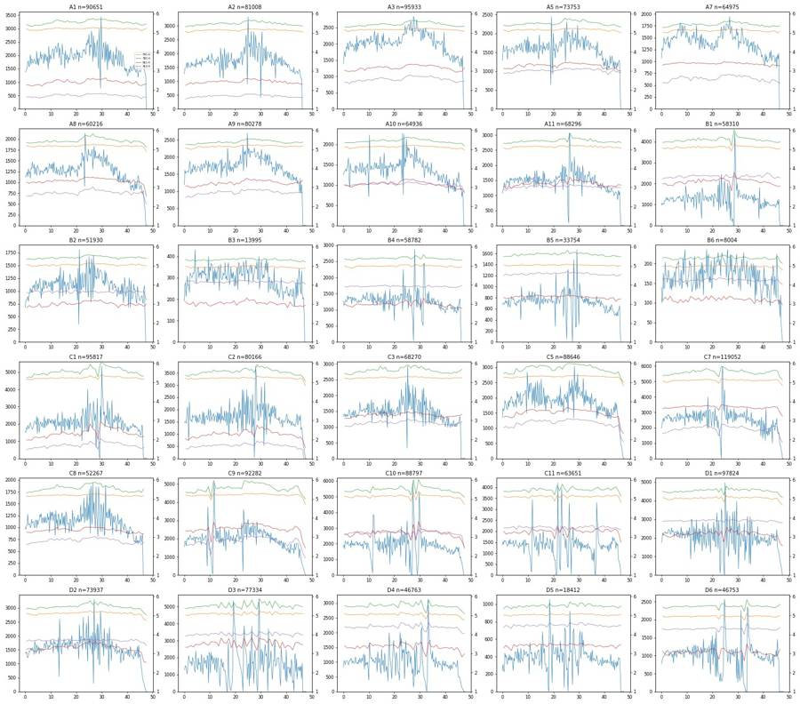
16
tool call · Bash
cd /task/work; cat > p1.py <<'EOF'
from load import *
import matplotlib; matplotlib.use('Agg'); import matplotlib.pyplot as plt
D=load()
import pickle; pickle.dump(D,open('D.pkl','wb'))
wells=list(D)
def grid(x,y,fn,lin=True,rng=None,tx=None,ty=None):
fig,axs=plt.subplots(5,6,figsize=(24,20))
for ax,w in zip(axs.ravel(),wells):
d=D[w]; X=d[x].values; Y=d[y].values
if tx: X=tx(X)
if ty: Y=ty(Y)
ax.hist2d(X,Y,bins=200,range=rng,norm=matplotlib.colors.LogNorm(),cmap='jet')
ax.set_title(f'{w} {lay.set_index("well").loc[w,"treatment"]} {lay.set_index("well").loc[w,"stain"]}',fontsize=9)
fig.suptitle(f'{x} vs {y}'); plt.tight_layout(); plt.savefig(fn,dpi=55)
grid('FSC-A','SSC-A','fsc_ssc.png',rng=[[0,1.06e6],[0,1.06e6]])
grid('SSC-H','SSC-A','ssch_ssca.png',rng=[[0,1.06e6],[0,1.06e6]])
EOF
python p1.py17
tool call · Read
{
"file_path": "/task/work/fsc_ssc.png"
}18
tool call · Read
{
"file_path": "/task/work/ssch_ssca.png"
}19
tool output
(Bash completed with no output)
20
tool output
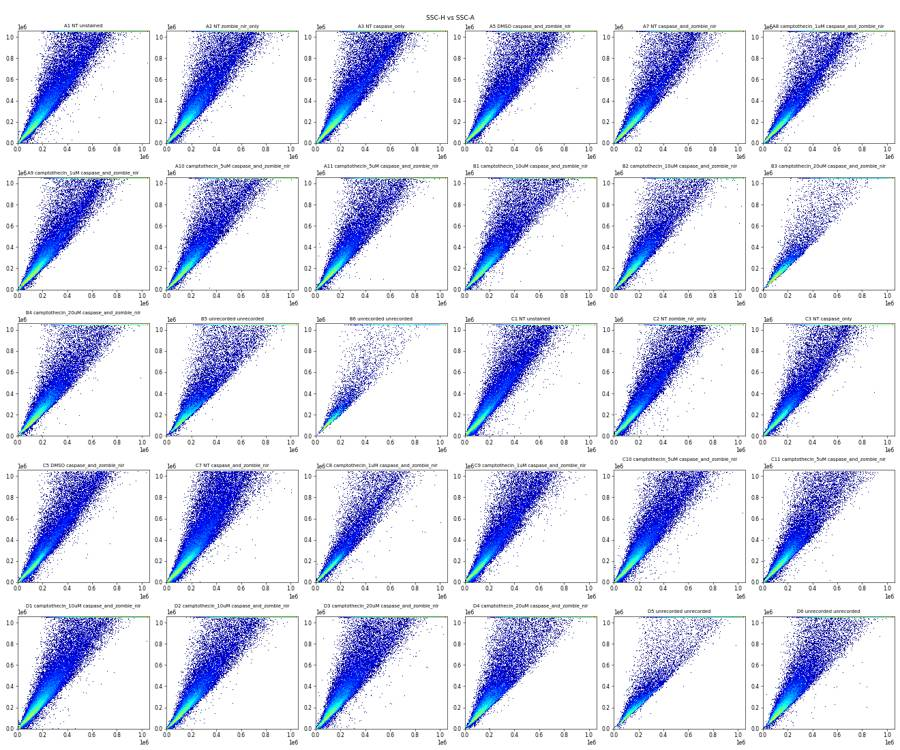
21
tool output
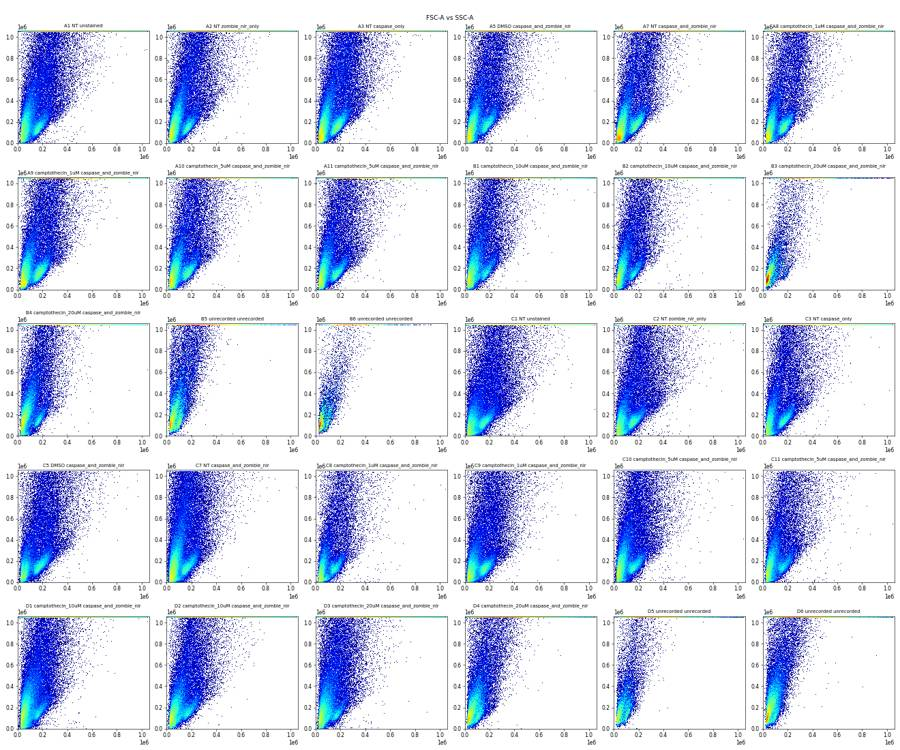
23
tool call · Bash
cd /task/work; cat > p2.py <<'EOF'
import pickle,numpy as np,pandas as pd
import matplotlib; matplotlib.use('Agg'); import matplotlib.pyplot as plt
D=pickle.load(open('D.pkl','rb'))
ws=['A1','A7','A8','B1','B4','B5','C1','C7','D1','D3','D5','D6']
fig,axs=plt.subplots(3,12,figsize=(48,12))
for j,w in enumerate(ws):
d=D[w]
axs[0,j].hist2d(d['FSC-A'],d['SSC-A'],bins=250,range=[[0,5e5],[0,6e5]],norm=matplotlib.colors.LogNorm(),cmap='jet'); axs[0,j].set_title(w+' all')
lo=d[d['RL3-A']<1000]; hi=d[d['RL3-A']>5000]
axs[1,j].hist2d(lo['FSC-A'],lo['SSC-A'],bins=250,range=[[0,5e5],[0,6e5]],norm=matplotlib.colors.LogNorm(),cmap='jet'); axs[1,j].set_title(w+' RL3<1000 n=%d'%len(lo))
axs[2,j].hist2d(hi['FSC-A'],hi['SSC-A'],bins=250,range=[[0,5e5],[0,6e5]],norm=matplotlib.colors.LogNorm(),cmap='jet'); axs[2,j].set_title(w+' RL3>5000 n=%d'%len(hi))
plt.tight_layout(); plt.savefig('fsc_ssc_zoom.png',dpi=45)
EOF
python p2.py24
tool call · Read
{
"file_path": "/task/work/fsc_ssc_zoom.png"
}25
tool output
(Bash completed with no output)
26
tool output
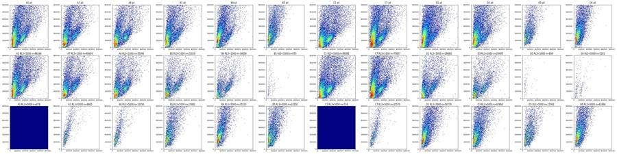
28
tool call · Bash
cd /task/work; cat > p3.py <<'EOF'
import pickle,numpy as np,pandas as pd
import matplotlib; matplotlib.use('Agg'); import matplotlib.pyplot as plt
D=pickle.load(open('D.pkl','rb'))
ws=['A1','A7','B1','B5','C7','D3']
fig,axs=plt.subplots(2,6,figsize=(36,12))
for j,w in enumerate(ws):
d=D[w]
axs[0,j].hist2d(d['FSC-A'],d['SSC-A'],bins=200,range=[[0,6e5],[0,1.06e6]],norm=matplotlib.colors.LogNorm(),cmap='jet'); axs[0,j].set_title(w+' all')
axs[0,j].grid(alpha=.4)
axs[1,j].hist2d(d['FSC-A'],d['SSC-A'],bins=150,range=[[0,4e5],[0,4e5]],cmap='jet'); axs[1,j].set_title(w+' linear density zoom')
axs[1,j].grid(alpha=.4)
plt.tight_layout(); plt.savefig('fsc_ssc_zoom2.png',dpi=50)
EOF
python p3.py29
tool call · Read
{
"file_path": "/task/work/fsc_ssc_zoom2.png"
}30
tool output
(Bash completed with no output)
31
tool output
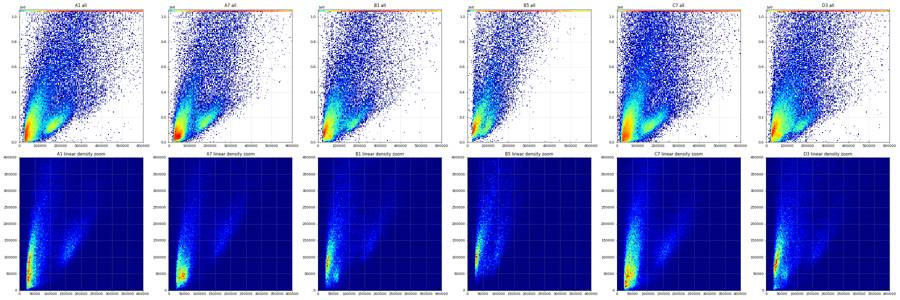
33
tool call · Bash
cd /task/work; cat > p4.py <<'EOF'
import pickle,numpy as np,pandas as pd
import matplotlib; matplotlib.use('Agg'); import matplotlib.pyplot as plt
D=pickle.load(open('D.pkl','rb'))
fig,axs=plt.subplots(5,6,figsize=(30,20))
for ax,(w,d) in zip(axs.ravel(),D.items()):
m=d['SSC-A']<1.04e6
ax.hist(d.loc[m,'FSC-A'],bins=np.arange(0,5e5,5e3),histtype='step',label='SSC<max')
m2=(d['SSC-A']<4e5)
ax.hist(d.loc[m2,'FSC-A'],bins=np.arange(0,5e5,5e3),histtype='step',label='SSC<400k')
ax.set_title(w); ax.grid(alpha=.4)
plt.tight_layout(); plt.savefig('fsc_hist.png',dpi=45)
# fluorescence by scatter region
for w in ['A1','A3','A7','A8','B1','B4','B5','C1','C7','D3','D5']:
d=D[w]
reg={'debris':(d['FSC-A']<90e3)&(d['SSC-A']<3e5),'cells':(d['FSC-A'].between(120e3,300e3))&(d['SSC-A'].between(60e3,3e5)),'hiSSC':(d['SSC-A']>5e5)&(d['SSC-A']<1.04e6),'sat':d['SSC-A']>=1.04e6}
print(w,' | '.join('%s n=%d BL1 %s RL3 %s'%(k,m.sum(),np.percentile(d.loc[m,'BL1-A'],[10,50,90]).astype(int),np.percentile(d.loc[m,'RL3-A'],[10,50,90]).astype(int)) for k,m in reg.items()))
EOF
python p4.py34
tool call · Read
{
"file_path": "/task/work/fsc_hist.png"
}35
tool output
A1 debris n=27171 BL1 [-24 55 315] RL3 [-50 10 76] | cells n=10609 BL1 [-21 58 191] RL3 [-61 8 79] | hiSSC n=12418 BL1 [ 154 575 2148] RL3 [-22 80 272] | sat n=27700 BL1 [ 645 2528 12265] RL3 [ 59 303 1481] A3 debris n=32513 BL1 [ 35 389 2783] RL3 [ -43 76 2935] | cells n=12941 BL1 [ -10 112 1565] RL3 [-55 71 590] | hiSSC n=12423 BL1 [ 527 2284 7740] RL3 [ 242 760 5477] | sat n=25767 BL1 [ 2410 10139 33108] RL3 [ 702 1985 16032] A7 debris n=23762 BL1 [ 58 886 4212] RL3 [ -53 65 5221] | cells n=7680 BL1 [ 2 119 3219] RL3 [-46 82 589] | hiSSC n=8115 BL1 [ 626 3056 8828] RL3 [ 287 886 11821] | sat n=17256 BL1 [ 2940 10498 30410] RL3 [ 839 2300 22494] A8 debris n=19967 BL1 [ 55 531 3941] RL3 [ -44 83 9449] | cells n=8160 BL1 [ 7 140 3538] RL3 [-59 66 652] | hiSSC n=7284 BL1 [ 733 3007 10776] RL3 [ 261 950 19144] | sat n=17828 BL1 [ 3190 13452 40328] RL3 [ 733 2150 22900] B1 debris n=19478 BL1 [ 64 405 3293] RL3 [ -79 2807 19034] | cells n=5916 BL1 [ 5 147 4208] RL3 [ -199 95 24323] | hiSSC n=7805 BL1 [ 515 3181 8787] RL3 [ 302 23109 96125] | sat n=16065 BL1 [ 2631 11206 41069] RL3 [ 875 7129 232389] B4 debris n=24848 BL1 [ 82 332 2873] RL3 [ -30 6765 19568] | cells n=5068 BL1 [ 10 133 3986] RL3 [ -221 60 21458] | hiSSC n=7446 BL1 [ 517 2608 9729] RL3 [ 426 37067 91983] | sat n=11878 BL1 [ 2526 11813 49114] RL3 [ 1049 28988 234775] B5 debris n=10527 BL1 [ 134 462 2191] RL3 [ 5172 13189 28520] | cells n=1347 BL1 [2240 3105 5337] RL3 [19859 36503 53618] | hiSSC n=6035 BL1 [ 499 3369 6638] RL3 [ 27207 66003 110990] | sat n=8992 BL1 [ 2312 7770 25971] RL3 [ 66458 158830 480179] C1 debris n=25990 BL1 [-41 30 166] RL3 [-57 3 64] | cells n=12443 BL1 [-36 37 133] RL3 [-64 4 72] | hiSSC n=10525 BL1 [ 134 495 1454] RL3 [-26 72 216] | sat n=34482 BL1 [ 722 2702 12693] RL3 [ 66 333 1696] C7 debris n=40520 BL1 [ 29 2666 8722] RL3 [-74 34 668] | cells n=11081 BL1 [ -74 109 4888] RL3 [-59 76 447] | hiSSC n=14777 BL1 [ 822 6330 13882] RL3 [ 225 621 3410] | sat n=38137 BL1 [ 4079 16109 52050] RL3 [ 822 2501 16432] D3 debris n=24925 BL1 [ 60 431 6571] RL3 [ -175 6061 19207] | cells n=7017 BL1 [ -11 262 9053] RL3 [ -470 93 31618] | hiSSC n=10670 BL1 [ 633 5708 15188] RL3 [ 323 36066 92853] | sat n=22150 BL1 [ 2984 16945 73204] RL3 [ 1058 65595 316348] D5 debris n=5960 BL1 [ 135 410 2461] RL3 [ 3611 10332 24536] | cells n=1176 BL1 [2577 3462 5271] RL3 [15440 30380 46449] | hiSSC n=2473 BL1 [ 495 3795 7010] RL3 [ 22007 55336 105858] | sat n=4697 BL1 [ 3394 9486 36418] RL3 [ 65104 161880 560421]
36
tool output
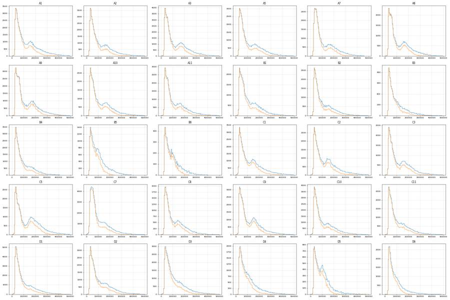
38
agent
Scatter structure is clear now (debris plume, a cell cloud, and SSC-A saturated in 13–40% of events on every well). Now placing the Cells ellipse and singlet gate, then the fluorescence boundaries.
39
tool call · Bash
cd /task/work; cat > p5.py <<'EOF'
import pickle,numpy as np,pandas as pd
import matplotlib; matplotlib.use('Agg'); import matplotlib.pyplot as plt
from matplotlib.patches import Ellipse
D=pickle.load(open('D.pkl','rb'))
groups={'unstained A1+C1':['A1','C1'],'NT/DMSO both A5 A7 C5 C7':['A5','A7','C5','C7'],'CPT 10-20 B1 B2 B4 D1-4':['B1','B2','B4','D1','D2','D3','D4'],'B5':['B5'],'D5':['D5'],'D6':['D6'],'B6':['B6'],'B3':['B3']}
fig,axs=plt.subplots(2,8,figsize=(56,14))
for j,(k,ws) in enumerate(groups.items()):
d=pd.concat([D[w] for w in ws])
for i,rng in enumerate([[[0,6e5],[0,1.06e6]],[[0,4e5],[0,5e5]]]):
ax=axs[i,j]
H,xe,ye=np.histogram2d(d['FSC-A'],d['SSC-A'],bins=120,range=rng)
from scipy.ndimage import gaussian_filter
Hs=gaussian_filter(H,1.2)
ax.imshow(np.log10(Hs.T+1),origin='lower',extent=[*rng[0],*rng[1]],aspect='auto',cmap='jet')
ax.contour(Hs.T,levels=np.percentile(Hs[Hs>0],[50,70,80,90,95,98]),extent=[*rng[0],*rng[1]],colors='w',linewidths=0.6)
ax.set_title(k); ax.grid(alpha=.3)
plt.tight_layout(); plt.savefig('contours.png',dpi=40)
EOF
python p5.py40
tool call · Read
{
"file_path": "/task/work/contours.png"
}41
tool output
(Bash completed with no output)
42
tool output
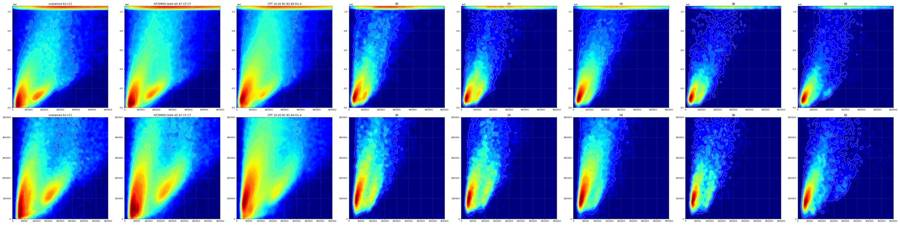
44
tool call · Bash
cd /task/work; cat > p6.py <<'EOF'
import pickle,numpy as np,pandas as pd,sys
import matplotlib; matplotlib.use('Agg'); import matplotlib.pyplot as plt
from scipy.ndimage import gaussian_filter
D=pickle.load(open('D.pkl','rb'))
cx,cy,a,b,th=[float(x) for x in sys.argv[1:6]]
t=np.deg2rad(th); R=np.array([[np.cos(t),-np.sin(t)],[np.sin(t),np.cos(t)]])
cov=R@np.diag([a*a,b*b])@R.T; ci=np.linalg.inv(cov)
def inside(d):
v=np.c_[d['FSC-A']-cx,d['SSC-A']-cy]; return np.einsum('ij,jk,ik->i',v,ci,v)<=1
ang=np.linspace(0,2*np.pi,200); el=(R@np.c_[a*np.cos(ang),b*np.sin(ang)].T).T+[cx,cy]
print('x range',el[:,0].min(),el[:,0].max(),'y range',el[:,1].min(),el[:,1].max())
ws=['A1','C1','A7','C7','A5','A8','B1','B4','D3','B3','B5','D5','D6','B6']
fig,axs=plt.subplots(2,7,figsize=(42,12))
for ax,w in zip(axs.ravel(),ws):
d=D[w]; rng=[[0,5e5],[0,7e5]]
H,xe,ye=np.histogram2d(d['FSC-A'],d['SSC-A'],bins=140,range=rng); Hs=gaussian_filter(H,1.0)
ax.imshow(np.log10(Hs.T+0.3),origin='lower',extent=[*rng[0],*rng[1]],aspect='auto',cmap='jet')
ax.plot(el[:,0],el[:,1],'w-',lw=2); ax.set_xlim(*rng[0]); ax.set_ylim(*rng[1])
ax.set_title('%s in=%.1f%%'%(w,inside(d).mean()*100),fontsize=16); ax.grid(alpha=.3)
plt.tight_layout(); plt.savefig('ell.png',dpi=40)
print({w:round(inside(d).mean()*100,1) for w,d in D.items()})
EOF
python p6.py 235000 215000 200000 85000 5245
tool call · Read
{
"file_path": "/task/work/ell.png"
}46
tool output
x range 94834.10091673135 375167.93179598707 y range 48946.69859387167 381061.26985090727
{'A1': 13.0, 'A2': 10.8, 'A3': 14.7, 'A5': 12.4, 'A7': 12.7, 'A8': 14.6, 'A9': 16.6, 'A10': 14.1, 'A11': 13.7, 'B1': 11.2, 'B2': 10.3, 'B3': 7.9, 'B4': 9.0, 'B5': 4.8, 'B6': 6.0, 'C1': 15.0, 'C2': 15.0, 'C3': 13.7, 'C5': 15.7, 'C7': 10.2, 'C8': 12.9, 'C9': 14.7, 'C10': 11.6, 'C11': 11.6, 'D1': 9.1, 'D2': 11.9, 'D3': 10.3, 'D4': 7.1, 'D5': 6.8, 'D6': 3.1}47
tool output
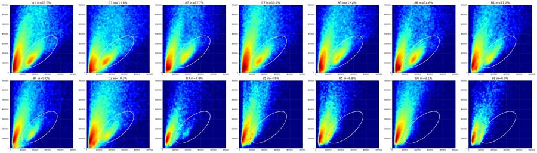
49
tool call · Bash
cd /task/work; cat > p7.py <<'EOF'
import pickle,numpy as np,pandas as pd,sys
import matplotlib; matplotlib.use('Agg'); import matplotlib.pyplot as plt
D=pickle.load(open('D.pkl','rb'))
cx,cy,a,b,th=235000,215000,200000,85000,52
t=np.deg2rad(th); R=np.array([[np.cos(t),-np.sin(t)],[np.sin(t),np.cos(t)]])
cov=R@np.diag([a*a,b*b])@R.T; ci=np.linalg.inv(cov)
def inside(d):
v=np.c_[d['FSC-A']-cx,d['SSC-A']-cy]; return np.einsum('ij,jk,ik->i',v,ci,v)<=1
C={w:d[inside(d)] for w,d in D.items()}
pickle.dump(C,open('C.pkl','wb'))
fig,axs=plt.subplots(5,6,figsize=(36,30))
for ax,(w,d) in zip(axs.ravel(),C.items()):
ax.hist2d(d['SSC-H'],d['SSC-A'],bins=150,range=[[0,4.5e5],[0,4.5e5]],norm=matplotlib.colors.LogNorm(),cmap='jet'); ax.set_title(w,fontsize=16); ax.grid(alpha=.4)
ax.plot([0,4.5e5],[0,4.5e5],'k--',lw=.5)
plt.tight_layout(); plt.savefig('sing.png',dpi=40)
for w,d in C.items():
r=d['SSC-A']/d['SSC-H'].clip(lower=1)
print(w,len(d),'A/H pct 1,5,25,50,75,90,95,99:',np.round(np.percentile(r,[1,5,25,50,75,90,95,99]),3), 'SSC-H sat',(d['SSC-H']>=1048575).sum(),'H min',d['SSC-H'].min())
al=pd.concat(C.values()); r=al['SSC-A']/al['SSC-H'].clip(lower=1)
h,e=np.histogram(r,bins=np.arange(0.7,2.5,0.02)); print(list(zip(np.round(e[:-1],2),h)))
EOF
python p7.py50
tool call · Read
{
"file_path": "/task/work/sing.png"
}51
tool output
A1 11752 A/H pct 1,5,25,50,75,90,95,99: [0.758 0.977 1.115 1.187 1.299 1.515 1.704 2.087] SSC-H sat 0 H min 22108.0 A2 8734 A/H pct 1,5,25,50,75,90,95,99: [0.805 1.016 1.128 1.202 1.319 1.515 1.694 2.051] SSC-H sat 0 H min 28831.0 A3 14143 A/H pct 1,5,25,50,75,90,95,99: [0.839 1.018 1.127 1.193 1.288 1.452 1.617 2.054] SSC-H sat 0 H min 24890.0 A5 9172 A/H pct 1,5,25,50,75,90,95,99: [0.835 1.016 1.129 1.196 1.288 1.442 1.616 2.058] SSC-H sat 0 H min 34975.0 A7 8270 A/H pct 1,5,25,50,75,90,95,99: [0.909 1.059 1.144 1.207 1.299 1.44 1.583 1.987] SSC-H sat 0 H min 32272.0 A8 8816 A/H pct 1,5,25,50,75,90,95,99: [0.885 1.03 1.121 1.175 1.254 1.393 1.55 1.916] SSC-H sat 0 H min 34922.0 A9 13293 A/H pct 1,5,25,50,75,90,95,99: [0.863 1.024 1.117 1.176 1.259 1.407 1.564 1.973] SSC-H sat 0 H min 35836.0 A10 9186 A/H pct 1,5,25,50,75,90,95,99: [0.89 1.044 1.129 1.191 1.285 1.451 1.641 2.077] SSC-H sat 0 H min 27739.0 A11 9390 A/H pct 1,5,25,50,75,90,95,99: [0.865 1.031 1.124 1.189 1.283 1.428 1.601 2.046] SSC-H sat 0 H min 28488.0 B1 6516 A/H pct 1,5,25,50,75,90,95,99: [0.842 1.028 1.124 1.192 1.284 1.468 1.652 2.125] SSC-H sat 0 H min 21351.0 B2 5341 A/H pct 1,5,25,50,75,90,95,99: [0.85 1.046 1.125 1.187 1.29 1.452 1.634 2.076] SSC-H sat 0 H min 33667.0 B3 1106 A/H pct 1,5,25,50,75,90,95,99: [1.06 1.087 1.148 1.22 1.36 1.574 1.721 2.101] SSC-H sat 0 H min 40749.0 B4 5303 A/H pct 1,5,25,50,75,90,95,99: [0.867 1.037 1.12 1.18 1.266 1.433 1.605 2.056] SSC-H sat 0 H min 29162.0 B5 1610 A/H pct 1,5,25,50,75,90,95,99: [0.906 1.064 1.165 1.286 1.483 1.741 1.913 2.393] SSC-H sat 0 H min 47703.0 B6 480 A/H pct 1,5,25,50,75,90,95,99: [1.049 1.076 1.135 1.218 1.368 1.61 1.725 2.132] SSC-H sat 0 H min 43028.0 C1 14353 A/H pct 1,5,25,50,75,90,95,99: [0.717 0.928 1.102 1.178 1.296 1.527 1.72 2.108] SSC-H sat 0 H min 23049.0 C2 12047 A/H pct 1,5,25,50,75,90,95,99: [0.752 0.954 1.111 1.18 1.293 1.516 1.699 2.056] SSC-H sat 0 H min 15380.0 C3 9333 A/H pct 1,5,25,50,75,90,95,99: [0.772 0.992 1.118 1.186 1.278 1.437 1.606 1.974] SSC-H sat 0 H min 20258.0 C5 13917 A/H pct 1,5,25,50,75,90,95,99: [0.735 0.95 1.116 1.184 1.272 1.413 1.595 2.041] SSC-H sat 0 H min 31055.0 C7 12194 A/H pct 1,5,25,50,75,90,95,99: [0.697 0.913 1.096 1.175 1.281 1.46 1.632 2.094] SSC-H sat 0 H min 24343.0 C8 6740 A/H pct 1,5,25,50,75,90,95,99: [0.778 0.991 1.108 1.167 1.259 1.419 1.581 1.979] SSC-H sat 0 H min 27876.0 C9 13527 A/H pct 1,5,25,50,75,90,95,99: [0.709 0.909 1.092 1.156 1.242 1.41 1.593 2.089] SSC-H sat 0 H min 30334.0 C10 10294 A/H pct 1,5,25,50,75,90,95,99: [0.709 0.961 1.112 1.182 1.287 1.466 1.657 2.11 ] SSC-H sat 0 H min 25183.0 C11 7410 A/H pct 1,5,25,50,75,90,95,99: [0.789 1.002 1.129 1.198 1.301 1.47 1.63 2.084] SSC-H sat 0 H min 29862.0 D1 8883 A/H pct 1,5,25,50,75,90,95,99: [0.73 0.981 1.12 1.201 1.33 1.557 1.785 2.313] SSC-H sat 0 H min 11450.0 D2 8778 A/H pct 1,5,25,50,75,90,95,99: [0.808 1.008 1.126 1.195 1.292 1.466 1.625 2.085] SSC-H sat 0 H min 25338.0 D3 7939 A/H pct 1,5,25,50,75,90,95,99: [0.727 0.96 1.108 1.182 1.302 1.546 1.765 2.281] SSC-H sat 0 H min 22684.0 D4 3302 A/H pct 1,5,25,50,75,90,95,99: [0.906 1.06 1.151 1.25 1.421 1.689 1.932 2.604] SSC-H sat 0 H min 14862.0 D5 1249 A/H pct 1,5,25,50,75,90,95,99: [1.004 1.071 1.153 1.251 1.415 1.629 1.81 2.16 ] SSC-H sat 0 H min 48903.0 D6 1428 A/H pct 1,5,25,50,75,90,95,99: [0.667 1.011 1.116 1.199 1.356 1.58 1.741 2.117] SSC-H sat 0 H min 43393.0 [(0.7, 232), (0.72, 251), (0.74, 289), (0.76, 355), (0.78, 388), (0.8, 454), (0.82, 542), (0.84, 597), (0.86, 677), (0.88, 873), (0.9, 967), (0.92, 1197), (0.94, 1375), (0.96, 1712), (0.98, 2127), (1.0, 2771), (1.02, 3943), (1.04, 5720), (1.06, 8913), (1.08, 12384), (1.1, 15717), (1.12, 17973), (1.14, 18327), (1.16, 17887), (1.18, 16194), (1.2, 14702), (1.22, 12581), (1.24, 10691), (1.26, 8910), (1.28, 7547), (1.3, 6356), (1.32, 5324), (1.34, 4518), (1.36, 3919), (1.38, 3388), (1.4, 2915), (1.42, 2505), (1.44, 2241), (1.46, 1982), (1.48, 1732), (1.5, 1640), (1.52, 1464), (1.54, 1375), (1.56, 1251), (1.58, 1132), (1.6, 1092), (1.62, 1007), (1.64, 924), (1.66, 872), (1.68, 808), (1.7, 762), (1.72, 709), (1.74, 638), (1.76, 608), (1.78, 571), (1.8, 474), (1.82, 461), (1.84, 441), (1.86, 408), (1.88, 378), (1.9, 330), (1.92, 313), (1.94, 321), (1.96, 269), (1.98, 290), (2.0, 232), (2.02, 230), (2.04, 208), (2.06, 210), (2.08, 189), (2.1, 161), (2.12, 178), (2.14, 137), (2.16, 158), (2.18, 134), (2.2, 107), (2.22, 96), (2.24, 88), (2.26, 95), (2.28, 86), (2.3, 86), (2.32, 60), (2.34, 58), (2.36, 60), (2.38, 59), (2.4, 44), (2.42, 42), (2.44, 41), (2.46, 46)]
52
tool output
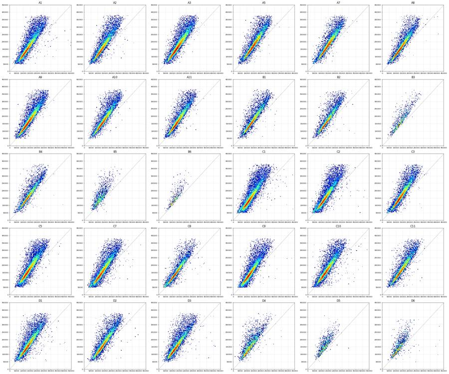
54
tool call · Bash
cd /task/work; cat > p8.py <<'EOF'
import pickle,numpy as np,pandas as pd,sys
import matplotlib; matplotlib.use('Agg'); import matplotlib.pyplot as plt
C=pickle.load(open('C.pkl','rb'))
al=pd.concat(C.values()); r=al['SSC-A']/al['SSC-H']
for lo,hi in [(40e3,80e3),(80e3,120e3),(120e3,160e3),(160e3,200e3),(200e3,250e3),(250e3,320e3)]:
m=al['SSC-H'].between(lo,hi); print(lo,hi,m.sum(),np.round(np.percentile(r[m],[2,5,10,25,50,75,90,95]),3))
S={w:d[(d['SSC-A']/d['SSC-H']).between(0.97,1.42)] for w,d in C.items()}
pickle.dump(S,open('S.pkl','wb'))
print({w:round(len(S[w])/len(C[w])*100,1) for w in C})
f=lambda x:np.arcsinh(x/150)/np.log(10)
ticks=[-1e3,0,1e3,1e4,1e5,1e6]
for ch,fn in [('RL3-A','rl3.png'),('BL1-A','bl1.png')]:
fig,axs=plt.subplots(5,6,figsize=(36,30))
for ax,(w,d) in zip(axs.ravel(),S.items()):
ax.hist2d(f(d[ch]),d['SSC-A'],bins=[120,60],range=[[f(-2000),f(1.05e6)],[0,4e5]],norm=matplotlib.colors.LogNorm(),cmap='jet'); ax.set_title(f'{w} n={len(d)}',fontsize=16)
ax.set_xticks(f(np.array(ticks))); ax.set_xticklabels(['-1e3','0','1e3','1e4','1e5','1e6']); ax.grid(alpha=.4)
ax2=ax.twinx(); ax2.hist(f(d[ch]),bins=120,range=[f(-2000),f(1.05e6)],histtype='step',color='k'); ax2.set_yticks([])
plt.suptitle(ch); plt.tight_layout(); plt.savefig(fn,dpi=40)
EOF
python p8.py55
tool call · Read
{
"file_path": "/task/work/rl3.png"
}56
tool call · Read
{
"file_path": "/task/work/bl1.png"
}57
tool output
40000.0 80000.0 14442 [0.821 0.913 0.999 1.077 1.183 1.407 1.684 1.953]
80000.0 120000.0 71977 [0.8 0.919 1.003 1.079 1.132 1.212 1.395 1.6 ]
120000.0 160000.0 83700 [0.924 1.021 1.075 1.126 1.178 1.258 1.43 1.652]
160000.0 200000.0 47383 [1.005 1.081 1.12 1.171 1.232 1.332 1.534 1.697]
200000.0 250000.0 22738 [1.029 1.111 1.151 1.204 1.271 1.367 1.496 1.576]
250000.0 320000.0 3824 [0.679 0.943 1.092 1.191 1.255 1.315 1.378 1.41 ]
{'A1': 80.8, 'A2': 81.6, 'A3': 85.4, 'A5': 85.8, 'A7': 86.9, 'A8': 89.0, 'A9': 87.9, 'A10': 86.6, 'A11': 87.0, 'B1': 85.4, 'B2': 86.3, 'B3': 80.9, 'B4': 87.3, 'B5': 67.7, 'B6': 79.2, 'C1': 78.2, 'C2': 80.1, 'C3': 84.8, 'C5': 84.3, 'C7': 80.8, 'C8': 85.9, 'C9': 82.6, 'C10': 82.6, 'C11': 83.8, 'D1': 78.8, 'D2': 84.4, 'D3': 78.9, 'D4': 73.4, 'D5': 74.9, 'D6': 77.2}58
tool output
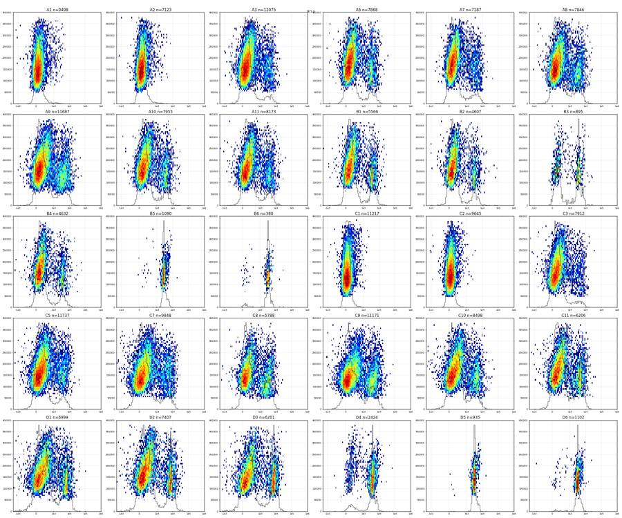
59
tool output
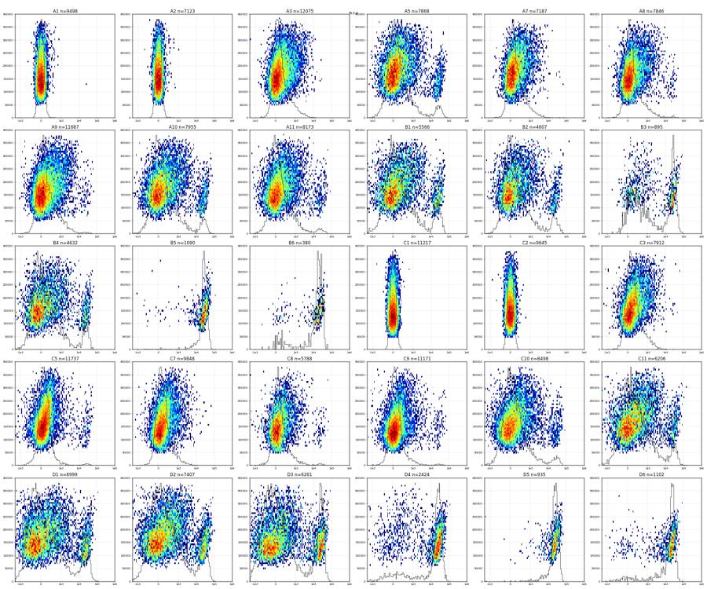
61
thinking
Cell and singlet gates look good, and the fluorescence plots show clear Zombie-bright and caspase-bright populations. I'm now quantifying the cut-offs, but the single-stain controls don't match their labels, so I'm checking that first.
62
tool call · Bash
cd /task/work; cat > p9.py <<'EOF'
import pickle,numpy as np,pandas as pd,sys
S=pickle.load(open('S.pkl','rb')); D=pickle.load(open('D.pkl','rb'))
np.set_printoptions(linewidth=250,suppress=True)
print('RL3 in singlets: pct 0.1,1,5,25,50,75,95,99,99.5,99.9 ; frac>3000, >6000, >10000')
for w,d in S.items():
x=d['RL3-A']; print(w,len(d),np.percentile(x,[0.1,1,5,25,50,75,95,99,99.5,99.9]).astype(int),np.round([(x>3000).mean()*100,(x>6000).mean()*100,(x>10000).mean()*100],2))
print('BL1 in singlets')
for w,d in S.items():
x=d['BL1-A']; print(w,len(d),np.percentile(x,[0.1,1,5,25,50,75,95,99,99.5,99.9]).astype(int),np.round([(x>600).mean()*100,(x>1000).mean()*100,(x>1500).mean()*100,(x>2000).mean()*100],2))
# pooled log hist for valley
f=lambda x:np.arcsinh(x/150)
edges=np.sinh(np.linspace(f(-500),f(3e5),70))*150
st=[w for w in S if w not in ('A1','A2','C1','C2')]
for ch in ['RL3-A','BL1-A']:
al=np.concatenate([S[w][ch].values for w in st]); h,_=np.histogram(al,bins=edges)
un=np.concatenate([S[w][ch].values for w in ('A1','A2','C1','C2')]); hu,_=np.histogram(un,bins=edges)
print(ch); print('\n'.join('%8.0f %6d %6d %s'%(edges[i],h[i],hu[i],'#'*int(h[i]/h.max()*60)) for i in range(len(h))))
# BL1 neg vs SSC in unstained+zombie-only
un=pd.concat([S[w] for w in ('A1','A2','C1','C2')])
for lo,hi in [(50e3,100e3),(100e3,150e3),(150e3,200e3),(200e3,250e3),(250e3,300e3),(300e3,400e3)]:
m=un['SSC-A'].between(lo,hi); print('unst SSC',lo,hi,m.sum(),np.percentile(un.loc[m,'BL1-A'],[50,95,99,99.5,99.9]).astype(int), 'RL3',np.percentile(un.loc[m,'RL3-A'],[50,95,99,99.5,99.9]).astype(int))
EOF
python p9.py63
tool output
RL3 in singlets: pct 0.1,1,5,25,50,75,95,99,99.5,99.9 ; frac>3000, >6000, >10000
A1 9498 [-158 -113 -78 -29 7 43 98 158 217 419] [0.01 0.01 0.01]
A2 7123 [-161 -115 -79 -28 7 42 98 149 191 388] [0. 0. 0.]
A3 12075 [-449 -173 -88 -2 66 198 1056 3173 4265 9242] [1.15 0.27 0.09]
A5 7868 [-3297 -515 -211 -36 61 261 15161 37797 44642 57660] [7.02 6.09 5.62]
A7 7187 [ -396 -158 -81 6 76 219 1064 3354 5226 10997] [1.24 0.35 0.14]
A8 7846 [ -447 -196 -96 -6 63 191 1319 7878 20843 31722] [2.03 1.16 0.85]
A9 11687 [ -637 -247 -123 -19 64 251 1677 7532 19658 38979] [2.6 1.19 0.82]
A10 7955 [-3484 -567 -225 -45 60 337 17314 36280 42024 58629] [8.07 6.68 6.1 ]
A11 8173 [-1208 -434 -187 -39 49 228 2210 27470 36429 51507] [4.32 3.23 2.73]
B1 5566 [-10611 -1201 -347 -56 78 542 24974 40626 45692 53923] [13.19 11.35 10.71]
B2 4607 [-2017 -514 -226 -58 49 337 18978 37644 44223 57186] [9.88 8.36 7.51]
B3 895 [ -281 -126 -35 127 872 22939 37574 50930 58390 73614] [41.9 39.55 37.65]
B4 4632 [-2054 -686 -315 -92 38 396 22560 38102 42629 54396] [10.49 9.39 8.74]
B5 1090 [-1008 0 5967 20793 26468 34345 47442 59643 63449 74125] [96.61 94.95 91.56]
B6 380 [ -323 -39 55 9271 17262 24728 35312 39666 45167 53800] [84.21 79.74 73.95]
C1 11217 [-157 -114 -81 -31 4 38 91 131 150 185] [0. 0. 0.]
C2 9645 [-160 -119 -83 -31 3 38 92 133 148 203] [0. 0. 0.]
C3 7912 [ -726 -190 -82 15 91 236 1173 3119 4944 19897] [1.06 0.39 0.15]
C5 11737 [-1356 -322 -112 -2 65 148 495 18842 29099 43791] [1.75 1.43 1.3 ]
C7 9848 [ -687 -198 -87 6 74 183 808 2968 4970 17242] [1. 0.35 0.18]
C8 5788 [-1437 -264 -98 -2 62 174 959 16697 25087 42788] [2.04 1.47 1.3 ]
C9 11171 [-1140 -300 -120 -19 44 129 727 13485 27938 49143] [1.75 1.29 1.12]
C10 8498 [-2612 -703 -278 -63 46 232 4040 35000 41952 55085] [5.73 4.33 3.88]
C11 6206 [-3549 -772 -288 -25 134 630 22426 44713 52709 76137] [11.09 8.6 7.48]
D1 6999 [-4920 -1273 -584 -163 29 591 26662 43187 48138 68548] [15.37 13.89 12.76]
D2 7407 [-3337 -884 -354 -50 132 960 31660 49799 55915 70578] [17.28 15.03 13.81]
D3 6261 [-8667 -1678 -673 -154 55 1369 31942 44668 50262 63556] [22.92 21.75 20.22]
D4 2424 [-3725 -647 -115 5934 21206 29768 44732 58408 67745 78995] [77.19 74.96 72.36]
D5 935 [-5845 522 4814 18064 23549 29724 43955 54173 56780 61149] [97.11 94.01 91.02]
D6 1102 [-2912 -371 12 10750 20022 26239 37935 46315 50927 61171] [85.57 81.67 76.32]
BL1 in singlets
A1 9498 [-311 -84 -40 14 54 99 253 1034 1548 3310] [1.76 1.06 0.54 0.38]
A2 7123 [-259 -77 -34 19 61 111 261 870 1519 2803] [1.53 0.86 0.51 0.32]
A3 12075 [ -366 -104 -35 43 110 222 3069 6628 8525 13143] [11.39 9.6 8.31 7.4 ]
A5 7868 [ -507 -86 -23 55 125 271 4015 7592 9131 13831] [17.4 15.47 14.07 12.93]
A7 7187 [ -257 -75 -24 49 115 241 4422 8054 9669 12952] [15.53 13.34 11.66 10.24]
A8 7846 [ -365 -85 -19 57 139 418 4820 8415 10760 19406] [21.65 18.61 16.28 14.25]
A9 11687 [ -372 -95 -21 61 157 508 6253 11435 13809 24305] [23.1 19.55 17.45 15.76]
A10 7955 [ -277 -74 -15 64 145 350 4261 7700 10527 19325] [19.42 17.21 15.54 13.98]
A11 8173 [ -448 -102 -20 59 137 308 4440 8422 10773 17522] [17.22 14.8 13.29 11.83]
B1 5566 [ -511 -74 -18 62 142 372 5205 7938 10363 19780] [21.45 20.12 18.88 18.11]
B2 4607 [ -378 -89 -23 49 109 231 3732 6591 8217 17911] [17.45 16.02 14.87 13.52]
B3 895 [ -42 -8 42 133 938 3540 6360 9012 13390 23534] [51.28 49.72 48.04 46.59]
B4 4632 [ -689 -92 -16 58 125 287 4309 8531 11416 27128] [19.56 17.96 16.73 15.72]
B5 1090 [ 7 212 2038 2471 2721 3087 5236 6431 7467 8647] [98.35 98.17 97.8 95.41]
B6 380 [ -7 25 94 2782 3123 3487 5176 6395 8126 24672] [92.37 92.37 91.84 89.74]
C1 11217 [-242 -91 -52 -1 36 76 167 412 563 978] [0.42 0.1 0.04 0.01]
C2 9645 [-287 -91 -49 2 40 79 160 348 505 1114] [0.34 0.13 0.04 0.03]
C3 7912 [ -640 -117 -31 49 118 230 2820 7425 8755 12974] [10.73 8.81 7.39 6.37]
C5 11737 [ -604 -153 -47 42 128 290 4193 8418 10299 15002] [14.88 12.59 11.07 9.85]
C7 9848 [-1154 -293 -107 14 104 332 6136 11676 13964 19220] [18.6 15.85 14.02 12.7 ]
C8 5788 [ -441 -101 -20 62 166 1249 4771 8071 9489 14638] [29.49 26.66 23.19 19.18]
C9 11171 [ -609 -203 -66 31 136 685 6441 12396 14290 24432] [26. 22.59 20.76 19. ]
C10 8498 [ -925 -177 -41 55 161 419 5057 9724 11858 24932] [20.39 17.43 15.47 13.85]
C11 6206 [ -891 -109 -9 91 220 933 5894 10383 12610 20948] [27.63 24.61 22.4 20.56]
D1 6999 [-1523 -229 -48 67 220 859 7613 14234 17378 28424] [28.08 24.2 22.37 21.37]
D2 7407 [-1375 -174 -30 78 225 910 9154 16286 21057 38582] [28.37 24.57 23.32 22.76]
D3 6261 [-1826 -202 -44 73 234 4721 9919 15224 17136 29056] [33.65 31.4 30.03 29.24]
D4 2424 [ -325 18 86 2518 3625 4164 7135 9177 11678 26050] [82.67 81.44 80.36 78.67]
D5 935 [-269 1749 2200 2839 3173 3543 5580 6767 7106 9663] [99.47 99.47 99.25 97.65]
D6 1102 [ -675 79 1842 2784 3149 3560 5638 7234 8954 14839] [96.46 96.1 95.74 94.1 ]
RL3-A
-500 630 0 ###
-428 828 2 ####
-365 1023 2 #####
-311 1250 0 #######
-263 1570 3 ########
-221 1977 10 ###########
-183 2589 49 ##############
-150 3283 220 ##################
-120 4457 793 #########################
-93 5894 1974 #################################
-68 7000 3339 #######################################
-44 8632 5102 #######################################
… [4,967 more characters not shown]65
tool call · Bash
cd /task/work; cat > q1.py <<'EOF'
import pickle,numpy as np,pandas as pd,sys
D=pickle.load(open('D.pkl','rb'))
np.set_printoptions(linewidth=250,suppress=True)
cx,cy,a,b,th=235000,215000,200000,85000,52
t_=np.deg2rad(th); R=np.array([[np.cos(t_),-np.sin(t_)],[np.sin(t_),np.cos(t_)]]); ci=np.linalg.inv(R@np.diag([a*a,b*b])@R.T)
def inside(d):
v=np.c_[d['FSC-A']-cx,d['SSC-A']-cy]; return np.einsum('ij,jk,ik->i',v,ci,v)<=1
print('well n tmax medrate | bins(0.5s)<50%med, <25%med, zero | maxgap | rateCV | gaps>0.1s n,total | last3s rate/med | first/last-2s FSC med, SSCsat% ')
for w,d in D.items():
t=d['Time'].values; tmax=t.max()
e=np.arange(0,np.floor(tmax*2)/2+1e-9,0.5); h,_=np.histogram(t,bins=e); r=h/0.5; med=np.median(r)
dt=np.diff(t); g=dt[dt>0.1]
last=(t>tmax-2); mid=(t>5)&(t<tmax-5)
cells=inside(d)
# cells fraction per 6 chunks
ch=np.array_split(np.arange(len(d)),8); cf=[cells[i].mean()*100 for i in ch]
sat=[(d['SSC-A'].values[i]>=1048575).mean()*100 for i in ch]
print('%-4s %6d %.1f %5.0f | %2d %2d %2d | %.2f | %.2f | %2d %.2f | %.2f | FSC %6.0f %6.0f | cells%% by octile %s | SSCsat%% %s'%(w,len(d),tmax,med,(r<0.5*med).sum(),(r<0.25*med).sum(),(h==0).sum(),dt.max(),r.std()/r.mean(),len(g),g.sum(),(last.sum()/2)/med,d['FSC-A'][mid].median(),d['FSC-A'][last].median(),np.round(cf,1),np.round(sat,0)))
EOF
python q1.py66
tool output
well n tmax medrate | bins(0.5s)<50%med, <25%med, zero | maxgap | rateCV | gaps>0.1s n,total | last3s rate/med | first/last-2s FSC med, SSCsat% A1 90651 47.5 1925 | 0 0 0 | 0.09 | 0.15 | 0 0.00 | 0.82 | FSC 169686 150185 | cells% by octile [14.6 13.6 12.5 14.3 11.6 11. 13. 13.1] | SSCsat% [24. 29. 33. 30. 35. 35. 31. 26.] A2 81008 46.3 1728 | 0 0 0 | 0.08 | 0.16 | 0 0.00 | 0.74 | FSC 144050 121948 | cells% by octile [11.9 11.6 10.9 10.7 8.9 10. 10.8 11.4] | SSCsat% [22. 26. 28. 26. 33. 29. 27. 23.] A3 95933 47.1 2044 | 0 0 0 | 0.02 | 0.14 | 0 0.00 | 0.71 | FSC 156380 131783 | cells% by octile [17.2 15. 13.7 15.7 12.9 13.2 14.4 15.9] | SSCsat% [21. 25. 28. 24. 34. 32. 28. 23.] A5 73753 46.3 1616 | 0 0 0 | 0.07 | 0.13 | 0 0.00 | 0.74 | FSC 152208 120560 | cells% by octile [14.2 12.9 12. 13.1 10.2 11.2 12. 13.8] | SSCsat% [22. 27. 29. 27. 36. 35. 31. 23.] A7 64975 46.2 1415 | 0 0 0 | 0.02 | 0.14 | 0 0.00 | 0.75 | FSC 140272 107964 | cells% by octile [13.7 12.9 12.1 13.5 11.5 11.8 12.5 13.8] | SSCsat% [21. 29. 27. 23. 32. 31. 27. 21.] A8 60216 47.3 1277 | 1 0 0 | 0.03 | 0.18 | 0 0.00 | 0.55 | FSC 157706 130412 | cells% by octile [16.7 14.9 14.5 15.3 12.3 13.6 14.5 15.3] | SSCsat% [25. 27. 28. 29. 38. 34. 28. 26.] A9 80278 46.4 1726 | 0 0 0 | 0.05 | 0.14 | 0 0.00 | 0.68 | FSC 151646 146039 | cells% by octile [18.5 17.1 16.3 16.6 14.5 14.9 17. 17.5] | SSCsat% [18. 23. 25. 24. 31. 30. 25. 22.] A10 64936 47.2 1418 | 0 0 0 | 0.11 | 0.16 | 1 0.11 | 0.67 | FSC 144014 110970 | cells% by octile [15.7 14.3 13.3 13.5 11.9 13.3 15.3 15.9] | SSCsat% [21. 25. 27. 24. 33. 29. 24. 18.] A11 68296 46.4 1499 | 0 0 0 | 0.18 | 0.15 | 1 0.18 | 0.70 | FSC 144394 121658 | cells% by octile [15.5 14.3 13.6 13.5 11.9 12.5 13.8 14.9] | SSCsat% [21. 27. 28. 27. 33. 32. 27. 23.] B1 58310 46.3 1260 | 2 1 0 | 0.48 | 0.27 | 2 0.60 | 0.83 | FSC 135798 108109 | cells% by octile [12.9 11.4 10.5 10.9 10.4 10.3 10.6 12.3] | SSCsat% [21. 25. 30. 27. 31. 34. 29. 22.] B2 51930 47.2 1095 | 0 0 0 | 0.13 | 0.14 | 1 0.13 | 0.83 | FSC 117676 109481 | cells% by octile [11.7 11.1 9.9 10.1 9. 10.1 10.6 9.8] | SSCsat% [18. 21. 24. 24. 30. 27. 22. 24.] B3 13995 47.2 308 | 0 0 0 | 0.07 | 0.15 | 0 0.00 | 0.78 | FSC 88812 71345 | cells% by octile [8.9 6.9 7.9 8.1 7.9 7.5 8. 8.1] | SSCsat% [10. 14. 13. 14. 17. 15. 12. 10.] B4 58782 46.2 1287 | 1 0 0 | 0.25 | 0.18 | 1 0.25 | 0.84 | FSC 101913 86147 | cells% by octile [9. 9.3 8.1 9.7 8.5 8.6 9.4 9.4] | SSCsat% [17. 19. 21. 19. 24. 24. 20. 16.] B5 33754 46.3 741 | 1 0 0 | 0.32 | 0.19 | 2 0.43 | 0.73 | FSC 110673 102464 | cells% by octile [5.9 5. 4.1 4.6 3.9 4.1 4.5 6. ] | SSCsat% [23. 26. 28. 26. 31. 30. 26. 22.] B6 8004 47.4 170 | 0 0 0 | 0.10 | 0.16 | 1 0.10 | 0.61 | FSC 96060 90583 | cells% by octile [7.7 5.7 7.4 5.6 4.7 5.3 5.7 5.9] | SSCsat% [14. 15. 14. 16. 20. 16. 14. 14.] C1 95817 46.3 2040 | 1 1 0 | 0.24 | 0.22 | 3 0.54 | 0.80 | FSC 182609 154424 | cells% by octile [17.8 16.3 15. 15.4 13.8 11.2 13.6 16.7] | SSCsat% [27. 32. 36. 34. 40. 46. 41. 32.] C2 80166 47.4 1661 | 1 0 0 | 0.26 | 0.19 | 2 0.37 | 0.59 | FSC 176072 149381 | cells% by octile [17.8 14.9 14.7 15.2 12.9 12.6 15.2 17. ] | SSCsat% [27. 33. 35. 35. 40. 41. 34. 27.] C3 68270 46.2 1467 | 0 0 0 | 0.11 | 0.15 | 1 0.11 | 0.79 | FSC 181814 176828 | cells% by octile [15.7 14.1 12.7 14.1 11.5 12. 14.4 15. ] | SSCsat% [31. 36. 39. 37. 43. 41. 35. 33.] C5 88646 47.4 1906 | 2 1 0 | 0.05 | 0.17 | 0 0.00 | 0.41 | FSC 210791 163588 | cells% by octile [18.8 15.8 14.3 15.7 13.4 13.1 15.2 19.4] | SSCsat% [32. 39. 44. 40. 46. 47. 41. 30.] C7 119052 47.4 2624 | 2 0 0 | 0.10 | 0.20 | 1 0.10 | 0.48 | FSC 133073 110950 | cells% by octile [11.6 10.4 9.7 9.9 9.1 9.5 10.8 10.9] | SSCsat% [26. 31. 34. 34. 36. 34. 29. 31.] C8 52267 46.2 1148 | 0 0 0 | 0.08 | 0.16 | 0 0.00 | 0.65 | FSC 160536 137960 | cells% by octile [15.8 13.5 12. 12.7 10.7 11.2 13.3 14. ] | SSCsat% [30. 34. 38. 35. 44. 40. 35. 29.] C9 92282 47.4 2004 | 4 2 0 | 0.14 | 0.28 | 1 0.14 | 0.32 | FSC 169360 128244 | cells% by octile [17.4 15.3 14.6 15.6 11.4 12.2 14.5 16.3] | SSCsat% [29. 34. 36. 35. 45. 44. 35. 32.] C10 88797 47.2 1938 | 5 2 0 | 0.33 | 0.30 | 5 0.96 | 0.54 | FSC 146544 99097 | cells% by octile [13. 12.1 11.3 11.3 10.1 10.6 10.8 13.6] | SSCsat% [26. 28. 30. 31. 36. 36. 32. 23.] C11 63651 46.4 1384 | 8 3 0 | 0.36 | 0.33 | 3 0.74 | 0.71 | FSC 137017 135225 | cells% by octile [12.8 12. 11.7 11.8 10.9 12. 10.8 11.1] | SSCsat% [26. 26. 32. 28. 34. 29. 31. 32.] D1 97824 47.4 2115 | 3 2 0 | 0.26 | 0.25 | 4 0.61 | 0.45 | FSC 116426 75516 | cells% by octile [10.5 9.5 8.4 8.5 9. 8.6 8.5 9.6] | SSCsat% [20. 23. 25. 27. 28. 27. 26. 21.] D2 73937 47.3 1593 | 2 1 0 | 0.12 | 0.21 | 1 0.12 | 0.32 | FSC 139944 81066 | cells% by octile [13.1 12.1 12. 12.1 9.9 10.5 11.8 13.4] | SSCsat% [21. 24. 27. 27. 36. 33. 26. 20.] D3 77334 46.4 1595 | 6 4 0 | 0.29 | 0.42 | 9 1.71 | 0.85 | FSC 132344 125618 | cells% by octile [11.6 10.4 9.8 10.5 10. 8.3 10.2 11.4] | SSCsat% [21. 27. 31. 26. 31. 36. 30. 25.] D4 46763 47.2 982 | 6 2 0 | 0.30 | 0.34 | 1 0.30 | 0.31 | FSC 117877 81794 | cells% by octile [8.1 7.2 7. 6.5 6.6 6. 7.1 8. ] | SSCsat% [23. 26. 26. 27. 31. 33. 25. 21.] D5 18412 46.4 390 | 2 1 0 | 0.31 | 0.28 | 5 1.01 | 0.90 | FSC 112758 110611 | cells% by octile [7.9 6.3 6.6 6.7 6. 6.8 6.5 7.4] | SSCsat% [19. 24. 26. 27. 30. 30. 27. 21.] D6 46753 46.2 1052 | 8 2 0 | 0.36 | 0.30 | 3 0.89 | 1.00 | FSC 91945 86970 | cells% by octile [3.8 3. 2.9 2.7 2.9 2.8 3.2 3.1] | SSCsat% [20. 21. 22. 25. 22. 26. 23. 21.]
68
tool call · Bash
cd /task/work; cat > q2.py <<'EOF'
import pickle,numpy as np,pandas as pd,sys
D=pickle.load(open('D.pkl','rb'))
cx,cy,a,b,th=235000,215000,200000,85000,52
t_=np.deg2rad(th); R=np.array([[np.cos(t_),-np.sin(t_)],[np.sin(t_),np.cos(t_)]]); ci=np.linalg.inv(R@np.diag([a*a,b*b])@R.T)
def inside(d):
v=np.c_[d['FSC-A']-cx,d['SSC-A']-cy]; return np.einsum('ij,jk,ik->i',v,ci,v)<=1
for w,d in D.items():
t=d['Time'].values; tmax=t.max(); c=inside(d)
med=np.median(np.histogram(t,bins=np.arange(0,tmax,1))[0])
out=[]
for k in range(8,0,-1):
m=(t>tmax-k)&(t<=tmax-k+1)
out.append('%4.2f/%3.0fk/%2.0f%%/%4.0f'%(m.sum()/med,d['FSC-A'][m].median()/1e3 if m.sum() else 0,c[m].mean()*100 if m.sum() else 0,d['BL1-A'][m].median() if m.sum() else 0))
print('%-4s'%w,' '.join(out))
EOF
python q2.py69
tool output
A1 0.69/165k/12%/ 246 0.75/176k/13%/ 290 0.77/156k/13%/ 202 0.79/163k/13%/ 249 0.74/163k/14%/ 219 0.72/137k/12%/ 174 0.88/139k/13%/ 194 0.75/159k/16%/ 184 A2 1.00/133k/12%/ 244 0.95/146k/10%/ 285 0.91/133k/12%/ 222 0.81/130k/12%/ 212 0.81/120k/12%/ 213 0.76/120k/11%/ 222 0.77/134k/12%/ 234 0.70/113k/10%/ 202 A3 0.92/157k/15%/1516 0.84/145k/15%/1263 0.80/144k/15%/1341 0.75/145k/15%/1079 0.75/142k/18%/1017 0.77/140k/18%/ 824 0.71/136k/16%/ 967 0.71/129k/15%/1040 A5 0.92/151k/13%/1938 0.76/139k/13%/1354 0.72/134k/14%/1390 0.72/116k/14%/1170 0.80/138k/13%/1512 0.75/137k/14%/1252 0.72/130k/15%/1194 0.76/111k/14%/1092 A7 0.88/129k/16%/2157 0.77/117k/11%/2163 0.72/110k/14%/1929 0.72/115k/14%/1930 0.80/115k/17%/1776 0.77/129k/14%/2098 0.74/123k/15%/1958 0.75/101k/12%/1900 A8 0.84/155k/14%/2207 0.80/150k/15%/1982 0.68/142k/15%/1934 0.70/147k/15%/2130 0.72/159k/14%/1928 0.78/152k/15%/2338 0.65/134k/17%/1495 0.45/124k/20%/1048 A9 0.91/137k/17%/1568 0.91/136k/19%/1333 0.86/148k/17%/1625 0.83/147k/20%/1496 0.81/144k/18%/1796 0.79/134k/16%/1464 0.70/148k/15%/1913 0.68/145k/17%/2112 A10 0.83/127k/14%/1266 0.79/128k/17%/ 874 0.69/117k/15%/1172 0.66/120k/13%/1256 0.66/105k/16%/ 900 0.75/107k/17%/ 846 0.76/117k/18%/ 861 0.58/105k/18%/ 669 A11 0.89/136k/17%/1194 0.86/129k/15%/1284 0.77/138k/16%/1234 0.75/136k/15%/1032 0.78/142k/14%/1372 0.72/122k/16%/1002 0.69/122k/14%/1219 0.70/121k/12%/1416 B1 0.78/119k/13%/1678 0.78/131k/12%/2016 0.79/129k/12%/1788 0.85/130k/12%/1933 0.76/138k/12%/1664 0.73/110k/12%/1402 0.78/109k/11%/1250 0.88/106k/12%/1126 B2 0.98/109k/11%/ 806 0.90/120k/10%/1086 0.82/123k/10%/1074 0.89/120k/11%/ 982 0.83/122k/10%/ 836 0.79/114k/ 8%/1035 0.80/112k/ 9%/ 911 0.83/105k/10%/ 744 B3 0.75/ 93k/ 7%/1070 0.76/ 78k/ 8%/ 654 0.75/ 85k/ 7%/1257 0.68/ 78k/ 7%/ 702 0.69/ 83k/12%/ 817 0.89/ 75k/ 9%/ 732 0.89/ 68k/ 7%/ 804 0.63/ 75k/ 8%/ 710 B4 0.84/ 93k/10%/ 766 0.76/ 93k/10%/ 732 0.78/ 89k/ 8%/ 732 0.89/ 96k/ 9%/ 942 0.81/ 96k/10%/ 725 0.78/ 85k/10%/ 586 0.76/ 90k/10%/ 685 0.91/ 82k/ 9%/ 623 B5 0.91/107k/ 6%/2102 0.89/106k/ 5%/2117 0.79/101k/ 5%/1724 0.75/106k/ 6%/1937 0.86/108k/ 8%/2074 0.71/104k/ 7%/1931 0.68/103k/ 6%/1546 0.78/102k/ 6%/1792 B6 0.82/ 93k/ 7%/1428 0.91/110k/ 5%/2724 0.79/ 88k/10%/1357 0.71/ 73k/ 3%/ 860 0.98/ 86k/ 5%/1321 0.92/ 95k/ 7%/1424 0.80/104k/ 5%/2270 0.41/ 60k/ 6%/ 971 C1 0.96/168k/15%/ 230 0.88/183k/16%/ 234 0.85/171k/17%/ 178 0.90/177k/16%/ 180 0.92/180k/17%/ 197 0.92/180k/17%/ 183 0.79/163k/16%/ 169 0.81/146k/18%/ 123 C2 0.92/182k/16%/ 208 0.96/170k/16%/ 174 0.84/166k/14%/ 184 0.84/162k/15%/ 178 0.85/152k/19%/ 124 0.98/157k/18%/ 122 0.80/166k/17%/ 148 0.34/ 95k/26%/ 62 C3 0.86/159k/15%/1490 0.80/167k/17%/1328 0.80/175k/14%/1838 0.75/161k/17%/1454 0.68/161k/14%/1540 0.77/185k/16%/1661 0.72/177k/14%/1874 0.84/177k/14%/1808 C5 0.85/205k/18%/2124 0.81/198k/17%/1606 0.73/184k/18%/1822 0.77/189k/19%/1754 0.81/190k/19%/1298 0.87/189k/19%/1791 0.61/178k/22%/1161 0.20/ 97k/36%/ 215 C7 0.75/121k/11%/4297 0.70/123k/10%/4583 0.70/136k/11%/4688 0.70/123k/ 9%/5019 0.72/139k/10%/5110 0.82/143k/10%/5308 0.66/135k/11%/3994 0.29/ 78k/22%/1731 C8 0.88/135k/12%/1765 0.86/150k/15%/1722 0.78/135k/13%/1700 0.81/143k/16%/1517 0.70/150k/16%/1447 0.64/154k/14%/1788 0.60/145k/12%/1936 0.71/135k/15%/1436 C9 0.81/153k/17%/2097 0.69/151k/16%/1738 0.72/158k/14%/2661 0.68/166k/14%/3061 0.76/171k/13%/3514 0.76/167k/17%/2994 0.45/147k/20%/1343 0.19/ 88k/32%/ 335 C10 0.91/136k/13%/1419 0.84/143k/14%/1518 0.78/136k/11%/1538 0.76/127k/14%/1000 0.78/111k/15%/ 872 0.87/113k/12%/1022 0.73/120k/14%/1027 0.36/ 72k/16%/ 437 C11 0.94/134k/11%/2137 0.89/140k/ 9%/2284 0.95/149k/11%/2164 0.96/147k/11%/2412 1.07/144k/12%/1995 1.19/159k/ 9%/2540 0.97/166k/11%/2744 0.48/ 97k/17%/ 741 D1 0.94/121k/ 8%/1350 0.88/114k/10%/1339 0.85/114k/ 8%/1273 0.89/ 99k/ 7%/1117 1.00/ 98k/10%/ 981 0.98/114k/12%/1105 0.65/ 88k/10%/ 838 0.27/ 56k/13%/ 380 D2 0.87/128k/14%/1818 0.86/133k/13%/1336 0.85/133k/13%/1480 0.81/112k/14%/1520 0.88/113k/11%/1496 0.88/123k/13%/1415 0.47/ 94k/17%/ 754 0.16/ 59k/17%/ 322 D3 1.00/123k/11%/1923 0.81/112k/11%/2196 0.87/124k/12%/2709 0.88/127k/12%/2353 0.42/118k/14%/2221 1.04/132k/11%/3474 0.82/126k/11%/3318 0.87/125k/11%/2940 D4 0.91/116k/ 8%/2000 0.88/115k/ 9%/1992 0.78/106k/ 8%/1887 0.84/108k/ 7%/1887 0.94/110k/ 7%/1608 0.82/109k/ 9%/2087 0.46/ 88k/ 7%/1176 0.14/ 63k/10%/ 736 D5 0.86/106k/ 6%/2350 0.84/104k/ 6%/2541 0.83/103k/ 6%/2212 0.86/101k/ 7%/2567 0.85/102k/ 7%/2654 0.74/ 97k/ 7%/1931 0.81/109k/11%/2557 0.93/111k/ 7%/2725 D6 0.88/ 93k/ 3%/1163 0.88/ 93k/ 3%/ 866 0.88/ 97k/ 3%/1027 0.89/ 90k/ 2%/ 893 0.83/ 92k/ 4%/ 912 0.82/ 83k/ 3%/ 901 0.98/ 84k/ 4%/ 760 1.01/ 93k/ 3%/ 950
71
tool call · Bash
cd /task/work; cat > q3.py <<'EOF'
import pickle,numpy as np,pandas as pd,sys,itertools,hashlib
D=pickle.load(open('D.pkl','rb'))
cols=['FSC-A','SSC-A','BL1-A','RL3-A','FSC-H','SSC-H']
sets={w:set(map(bytes,np.ascontiguousarray(d[cols].values.astype('float32')))) for w,d in D.items()}
for w in sets:
if len(sets[w])!=len(D[w]): print(w,'internal dup rows',len(D[w])-len(sets[w]))
for a,b in itertools.combinations(sets,2):
n=len(sets[a]&sets[b])
if n>0: print(a,b,'shared rows',n)
# integer-ness / value structure
for w in ['A1','A2','B3','B6','D5']:
d=D[w]; print(w,d.head(3).to_string()); print((d[cols]%1==0).mean().round(3).to_dict())
EOF
python q3.py
python - <<'EOF'
import flowio,glob
for w in ['A1','A2','B3','B6','C2','D5']:
f=flowio.FlowData(f'/task/inputs/raw/Caspase_primaryneurons_caspase_Group_{w}.fcs',ignore_offset_error=True)
t=f.text; print(w,{k:t.get(k) for k in ['tot','vol','btim','etim','#coincidentcount','lost','originality','fil','wellid','$tot']}, [k for k in t if 'thresh' in k or 'tr' in k[:4] or 'abort' in k or 'flow' in k])
EOF72
tool output
A1 Time FSC-A SSC-A BL1-A RL3-A FSC-H SSC-H FSC-W SSC-W
0 0.016 961954.0 1048575.0 14618.0 1695.0 303715.0 1048575.0 191.0 210.0
1 0.016 167821.0 651312.0 2949.0 286.0 123635.0 462769.0 79.0 91.0
2 0.016 170314.0 106988.0 3.0 47.0 146731.0 122653.0 81.0 48.0
{'FSC-A': 1.0, 'SSC-A': 1.0, 'BL1-A': 1.0, 'RL3-A': 1.0, 'FSC-H': 1.0, 'SSC-H': 1.0}
A2 Time FSC-A SSC-A BL1-A RL3-A FSC-H SSC-H FSC-W SSC-W
0 0.015 62250.0 146355.0 133.0 3.0 55743.0 120292.0 72.0 80.0
1 0.015 180300.0 120704.0 21.0 -28.0 153037.0 106306.0 92.0 96.0
2 0.015 61050.0 174906.0 160.0 -20.0 57516.0 159440.0 71.0 73.0
{'FSC-A': 1.0, 'SSC-A': 1.0, 'BL1-A': 1.0, 'RL3-A': 1.0, 'FSC-H': 1.0, 'SSC-H': 1.0}
B3 Time FSC-A SSC-A BL1-A RL3-A FSC-H SSC-H FSC-W SSC-W
0 0.016 566100.0 1048575.0 21805.0 5301.0 120097.0 1048575.0 227.0 245.0
1 0.020 44359.0 113840.0 232.0 7842.0 41685.0 105598.0 67.0 74.0
2 0.024 114372.0 665105.0 1824.0 67366.0 102362.0 589267.0 82.0 89.0
{'FSC-A': 1.0, 'SSC-A': 1.0, 'BL1-A': 1.0, 'RL3-A': 1.0, 'FSC-H': 1.0, 'SSC-H': 1.0}
B6 Time FSC-A SSC-A BL1-A RL3-A FSC-H SSC-H FSC-W SSC-W
0 0.018 58542.0 236966.0 139.0 6153.0 52292.0 200222.0 68.0 80.0
1 0.019 71584.0 220650.0 774.0 9027.0 55075.0 161825.0 84.0 84.0
2 0.021 239834.0 830548.0 5019.0 71703.0 134715.0 481395.0 112.0 112.0
{'FSC-A': 1.0, 'SSC-A': 1.0, 'BL1-A': 1.0, 'RL3-A': 1.0, 'FSC-H': 1.0, 'SSC-H': 1.0}
D5 Time FSC-A SSC-A BL1-A RL3-A FSC-H SSC-H FSC-W SSC-W
0 0.014 142879.0 117661.0 2718.0 23324.0 118583.0 94844.0 85.0 87.0
1 0.017 25981.0 73146.0 137.0 5937.0 27734.0 75391.0 53.0 62.0
2 0.018 48976.0 363794.0 804.0 24640.0 49772.0 353699.0 71.0 76.0
{'FSC-A': 1.0, 'SSC-A': 1.0, 'BL1-A': 1.0, 'RL3-A': 1.0, 'FSC-H': 1.0, 'SSC-H': 1.0}
A1 {'tot': '90651', 'vol': '159000', 'btim': '14:47:52', 'etim': '14:48:40', '#coincidentcount': '4247', 'lost': '0', 'originality': 'Original', 'fil': 'A1.fcs', 'wellid': 'A1', '$tot': None} ['#flowrate', '#ptresult', '#tr1', '#widththreshold']
A2 {'tot': '81008', 'vol': '155000', 'btim': '14:49:07', 'etim': '14:49:54', '#coincidentcount': '3811', 'lost': '0', 'originality': 'Original', 'fil': 'A2.fcs', 'wellid': 'A2', '$tot': None} ['#flowrate', '#ptresult', '#tr1', '#widththreshold']
B3 {'tot': '13995', 'vol': '158000', 'btim': '15:01:27', 'etim': '15:02:15', '#coincidentcount': '134', 'lost': '0', 'originality': 'Original', 'fil': 'B3.fcs', 'wellid': 'B3', '$tot': None} ['#flowrate', '#ptresult', '#tr1', '#widththreshold']
B6 {'tot': '8004', 'vol': '159000', 'btim': '15:05:09', 'etim': '15:05:57', '#coincidentcount': '81', 'lost': '0', 'originality': 'Original', 'fil': 'B6.fcs', 'wellid': 'B6', '$tot': None} ['#flowrate', '#ptresult', '#tr1', '#widththreshold']
C2 {'tot': '80166', 'vol': '159000', 'btim': '15:07:37', 'etim': '15:08:25', '#coincidentcount': '4357', 'lost': '0', 'originality': 'Original', 'fil': 'C2.fcs', 'wellid': 'C2', '$tot': None} ['#flowrate', '#ptresult', '#tr1', '#widththreshold']
D5 {'tot': '18412', 'vol': '155000', 'btim': '15:22:27', 'etim': '15:23:15', '#coincidentcount': '477', 'lost': '0', 'originality': 'Original', 'fil': 'D5.fcs', 'wellid': 'D5', '$tot': None} ['#flowrate', '#ptresult', '#tr1', '#widththreshold']74
agent
No duplicated or tampered files — acquisition data look original. Building the FlowKit gating strategy now and exporting counts.
75
tool call · Bash
cd /task/work; cat > build.py <<'EOF'
import flowkit as fk, numpy as np, pandas as pd, pickle
from flowkit import Dimension, GatingStrategy
from flowkit.gates import RectangleGate, PolygonGate, EllipsoidGate
lay=pd.read_csv('/task/inputs/plate_layout.csv')
U='uncompensated'
# ---- gate parameters (raw linear channel units) ----
cx,cy,a,b,th=235000.,215000.,200000.,85000.,52.
t=np.deg2rad(th); R=np.array([[np.cos(t),-np.sin(t)],[np.sin(t),np.cos(t)]])
cov=R@np.diag([a*a,b*b])@R.T
SING=[(20000.,19400.),(20000.,28400.),(450000.,639000.),(450000.,436500.)] # SSC-H, SSC-A : A/H 0.97-1.42
SSC_LO,SSC_HI=40000.,400000.
RL3_LO,RL3_HI=-20000.,7000.
BL1_LO,BL1_HI=1500.,1000000.
gs=GatingStrategy()
gs.add_gate(EllipsoidGate('Cells',[Dimension('FSC-A',compensation_ref=U),Dimension('SSC-A',compensation_ref=U)],[cx,cy],cov.tolist(),1.0),gate_path=('root',))
gs.add_gate(PolygonGate('Single_Cells',[Dimension('SSC-H',compensation_ref=U),Dimension('SSC-A',compensation_ref=U)],SING),gate_path=('root','Cells'))
gs.add_gate(RectangleGate('Live',[Dimension('RL3-A',compensation_ref=U,range_min=RL3_LO,range_max=RL3_HI),Dimension('SSC-A',compensation_ref=U,range_min=SSC_LO,range_max=SSC_HI)]),gate_path=('root','Cells','Single_Cells'))
gs.add_gate(RectangleGate('Caspase_pos',[Dimension('BL1-A',compensation_ref=U,range_min=BL1_LO,range_max=BL1_HI),Dimension('SSC-A',compensation_ref=U,range_min=SSC_LO,range_max=SSC_HI)]),gate_path=('root','Cells','Single_Cells','Live'))
with open('/task/outputs/gates.xml','wb') as f: fk.export_gatingml(gs,f)
gs2=fk.parse_gating_xml('/task/outputs/gates.xml')
print(gs2.get_gate_ids())
pops=[('Cells','all_events'),('Single_Cells','Cells'),('Live','Single_Cells'),('Caspase_pos','Live')]
rows=[]; memb={}
for _,r in lay.iterrows():
s=fk.Sample('/task/inputs/raw/'+r.file, ignore_offset_error=True)
res=gs2.gate_sample(s)
cnt={'all_events':s.event_count}
for p,par in pops:
cnt[p]=int(res.get_gate_count(p))
memb[r.well]={p:res.get_gate_membership(p) for p,_ in pops}
for p,par in pops:
rows.append(dict(file=r.file,well=r.well,population=p,count=cnt[p],parent_population=par,pct_of_parent=round(cnt[p]/cnt[par]*100,4) if cnt[par] else 0.0))
df=pd.DataFrame(rows); df.to_csv('/task/outputs/counts.csv',index=False)
pickle.dump(memb,open('memb.pkl','wb'))
# independent numpy check
D=pickle.load(open('D.pkl','rb')); ci=np.linalg.inv(cov)
from matplotlib.path import Path
bad=0
for w,d in D.items():
v=np.c_[d['FSC-A']-cx,d['SSC-A']-cy]; c=np.einsum('ij,jk,ik->i',v,ci,v)<=1
s_=c&Path(SING).contains_points(d[['SSC-H','SSC-A']].values)
ssc=(d['SSC-A']>=SSC_LO)&(d['SSC-A']<SSC_HI)
l=s_&(d['RL3-A']>=RL3_LO)&(d['RL3-A']<RL3_HI)&ssc
p=l&(d['BL1-A']>=BL1_LO)&(d['BL1-A']<BL1_HI)
mine=[c.sum(),s_.sum(),l.sum(),p.sum()]; fkc=df[df.well==w]['count'].tolist()
if mine!=fkc: bad+=1; print('MISMATCH',w,mine,fkc)
print('mismatches',bad)
wide=df.pivot(index='well',columns='population',values='count').loc[lay.well,[p for p,_ in pops]]
wide.insert(0,'all',[len(D[w]) for w in wide.index])
wide['%Cells']=wide.Cells/wide['all']*100; wide['%Sing']=wide.Single_Cells/wide.Cells*100; wide['%Live']=wide.Live/wide.Single_Cells*100; wide['%Casp']=wide.Caspase_pos/wide.Live*100
wide['trt']=lay.set_index('well').treatment; wide['stain']=lay.set_index('well').stain
print(wide.round(2).to_string())
EOF
python build.py; head -c 3000 /task/outputs/gates.xml76
tool output (error)
Exit code 1
Traceback (most recent call last):
File "/task/work/build.py", line 3, in <module>
from flowkit.gates import RectangleGate, PolygonGate, EllipsoidGate
ModuleNotFoundError: No module named 'flowkit.gates'
head: cannot open '/task/outputs/gates.xml' for reading: No such file or directory78
tool call · Bash
cd /task/work; python -c "
import flowkit as fk; print(fk.__version__, fk.__file__); print([x for x in dir(fk) if not x.startswith('__')]); print(dir(fk.gates))
import inspect; print(inspect.signature(fk.gates.EllipsoidGate.__init__)); print(inspect.signature(fk.Dimension.__init__)); print(inspect.signature(fk.GatingStrategy.add_gate))"79
tool output
1.2.3 /usr/local/lib/python3.12/site-packages/flowkit/__init__.py ['Dimension', 'GatingStrategy', 'Matrix', 'QuadrantDivider', 'RatioDimension', 'Sample', 'Session', 'Workspace', '_conf', '_models', '_resources', '_utils', '_version', 'exceptions', 'export_gatingml', 'extract_wsp_sample_data', 'gates', 'generate_transforms', 'load_samples', 'parse_gating_xml', 'parse_wsp', 'read_multi_dataset_fcs', 'transforms'] ['BooleanGate', 'EllipsoidGate', 'PolygonGate', 'Quadrant', 'QuadrantGate', 'RectangleGate', '__all__', '__builtins__', '__cached__', '__doc__', '__file__', '__loader__', '__name__', '__package__', '__path__', '__spec__', '_base_gate', '_gates', '_gml_gates', '_wsp_gates'] (self, gate_name, dimensions, coordinates, covariance_matrix, distance_square) (self, dimension_id, compensation_ref='uncompensated', transformation_ref=None, range_min=None, range_max=None) (self, gate, gate_path, sample_id=None)
81
tool call · Bash
cd /task/work; python -c "
import flowkit
from flowkit.gates import RectangleGate
print('ok')"; python -c "
from flowkit import Dimension, GatingStrategy
from flowkit.gates import RectangleGate
print('ok2')"; ls82
tool output
Traceback (most recent call last): File "<string>", line 3, in <module> ModuleNotFoundError: No module named 'flowkit.gates' Traceback (most recent call last): File "<string>", line 3, in <module> ModuleNotFoundError: No module named 'flowkit.gates' C.pkl D.pkl S.pkl __pycache__ bl1.png build.py contours.png e2.py e3.py ell.png explore.py fsc_hist.png fsc_ssc.png fsc_ssc_zoom.png fsc_ssc_zoom2.png load.py p1.py p2.py p3.py p4.py p5.py p6.py p7.py p8.py p9.py q1.py q2.py q3.py rl3.png sing.png ssch_ssca.png time.png
84
tool call · Bash
cd /task/work; sed -i 's/^from flowkit.gates import RectangleGate, PolygonGate, EllipsoidGate/RectangleGate, PolygonGate, EllipsoidGate = fk.gates.RectangleGate, fk.gates.PolygonGate, fk.gates.EllipsoidGate/' build.py; python build.py; head -c 3500 /task/outputs/gates.xml
85
tool output
[('Cells', ('root',)), ('Single_Cells', ('root', 'Cells')), ('Live', ('root', 'Cells', 'Single_Cells')), ('Caspase_pos', ('root', 'Cells', 'Single_Cells', 'Live'))]
mismatches 0
population all Cells Single_Cells Live Caspase_pos %Cells %Sing %Live %Casp trt stain
well
A1 90651 11752 9498 9497 51 12.96 80.82 99.99 0.54 NT unstained
A2 81008 8734 7123 7123 36 10.78 81.55 100.00 0.51 NT zombie_nir_only
A3 95933 14143 12075 12049 994 14.74 85.38 99.78 8.25 NT caspase_only
A5 73753 9172 7868 7400 659 12.44 85.78 94.05 8.91 DMSO caspase_and_zombie_nir
A7 64975 8270 7187 7169 828 12.73 86.90 99.75 11.55 NT caspase_and_zombie_nir
A8 60216 8816 7846 7763 1203 14.64 89.00 98.94 15.50 camptothecin_1uM caspase_and_zombie_nir
A9 80278 13293 11687 11565 1942 16.56 87.92 98.96 16.79 camptothecin_1uM caspase_and_zombie_nir
A10 64936 9186 7955 7435 745 14.15 86.60 93.46 10.02 camptothecin_5uM caspase_and_zombie_nir
A11 68296 9390 8173 7920 860 13.75 87.04 96.90 10.86 camptothecin_5uM caspase_and_zombie_nir
B1 58310 6516 5566 4942 452 11.17 85.42 88.79 9.15 camptothecin_10uM caspase_and_zombie_nir
B2 51930 5341 4607 4230 326 10.28 86.26 91.82 7.71 camptothecin_10uM caspase_and_zombie_nir
B3 13995 1106 895 542 83 7.90 80.92 60.56 15.31 camptothecin_20uM caspase_and_zombie_nir
B4 58782 5303 4632 4203 364 9.02 87.35 90.74 8.66 camptothecin_20uM caspase_and_zombie_nir
B5 33754 1610 1090 64 49 4.77 67.70 5.87 76.56 unrecorded unrecorded
B6 8004 480 380 79 51 6.00 79.17 20.79 64.56 unrecorded unrecorded
C1 95817 14353 11217 11217 4 14.98 78.15 100.00 0.04 NT unstained
C2 80166 12047 9645 9645 4 15.03 80.06 100.00 0.04 NT zombie_nir_only
C3 68270 9333 7912 7887 575 13.67 84.77 99.68 7.29 NT caspase_only
C5 88646 13917 11737 11571 1153 15.70 84.34 98.59 9.96 DMSO caspase_and_zombie_nir
C7 119052 12194 9848 9822 1369 10.24 80.76 99.74 13.94 NT caspase_and_zombie_nir
C8 52267 6740 5788 5705 1269 12.90 85.88 98.57 22.24 camptothecin_1uM caspase_and_zombie_nir
C9 92282 13527 11171 11032 2194 14.66 82.58 98.76 19.89 camptothecin_1uM caspase_and_zombie_nir
C10 88797 10294 8498 8144 994 11.59 82.55 95.83 12.21 camptothecin_5uM caspase_and_zombie_nir
C11 63651 7410 6206 5697 915 11.64 83.75 91.80 16.06 camptothecin_5uM caspase_and_zombie_nir
D1 97824 8883 6999 6046 678 9.08 78.79 86.38 11.21 camptothecin_10uM caspase_and_zombie_nir
D2 73937 8778 7407 6328 672 11.87 84.38 85.43 10.62 camptothecin_10uM caspase_and_zombie_nir
D3 77334 7939 6261 4928 588 10.27 78.86 78.71 11.93 camptothecin_20uM caspase_and_zombie_nir
D4 46763 3302 2424 620 172 7.06 73.41 25.58 27.74 camptothecin_20uM caspase_and_zombie_nir
D5 18412 1249 935 65 61 6.78 74.86 6.95 93.85 unrecorded unrecorded
D6 46753 1428 1102 220 183 3.05 77.17 19.96 83.18 unrecorded unrecorded
<?xml version='1.0' encoding='UTF-8'?>
<gating:Gating-ML xmlns:gating="http://www.isac-net.org/std/Gating-ML/v2.0/gating" xmlns:data-type="http://www.isac-net.org/std/Gating-ML/v2.0/datatypes" xmlns:transforms="http://www.isac-net.org/std/Gating-ML/v2.0/transformations">
<gating:EllipsoidGate gating:id="Cells">
<gating:dimension gating:compensation-ref="uncompensated">
<data-type:fcs-dimension data-type:name="FSC-A"/>
</gating:dimension>
<gating:dimension gating:compensation-ref="uncompensated">
<data-type:fcs-dimension data-type:name="SSC-A"/>
</gating:dimension>
<gating:mean>
<gating:coordinate data-type:value="235000.0"/>
<gating:coordinate data-type:value="215000.0"/>
</gating:mean>
<gating:covarianceMatrix>
<gating:row>
<gating:entry data-type:value="19648004935.860447"/>
<gating:entry data-type:value="15900721214.347895"/>
</gating:row>
<gating:row>
<gating:entry data-type:value="15900721214.347895"/>
<gating:entry data-type:value="27576995064.13956"/>
</gating:row>
</gating:covarianceMatrix>
<gating:distanceSquare data-type:value="1.0"/>
</gating:EllipsoidGate>
<gating:PolygonGate gating:id="Single_Cells" gating:parent_id="Cells">
<gating:dimension gating:compensation-ref="uncompensated">
<data-type:fcs-dimension data-type:name="SSC-H"/>
</gating:dimension>
<gating:dimension gating:compensation-ref="uncompensated">
<data-type:fcs-dimension data-type:name="SSC-A"/>
</gating:dimension>
… [1,575 more characters not shown]87
tool call · Bash
cd /task/work; cat > q4.py <<'EOF'
import pickle,numpy as np,pandas as pd
from scipy.stats import chi2_contingency
D=pickle.load(open('D.pkl','rb')); M=pickle.load(open('memb.pkl','rb'))
print('well medrate | 0.25s bins <20%% med: n, episodes, times | bins>180%% | gaps>0.1s (n,sum) | Cells%% / Live%% / Casp%% by time quartile | chi2 p (cells, live, casp)')
res={}
for w,d in D.items():
t=d['Time'].values; tmax=t.max()
e=np.arange(0,np.floor((tmax-1.5)*4)/4+1e-9,0.25) # ignore last 1.5 s (end-of-sample tail)
h,_=np.histogram(t,bins=e); med=np.median(h)
low=h<0.2*med; idx=np.where(low)[0]
ep=[]
for i in idx:
if ep and i-ep[-1][-1]<=2: ep[-1].append(i)
else: ep.append([i])
dt=np.diff(t); g=dt[dt>0.1]
q=np.minimum((t/tmax*4).astype(int),3)
m=M[w]; out=[]; ps=[]
for num,den in [('Cells',None),('Live','Single_Cells'),('Caspase_pos','Live')]:
den_m=np.ones(len(t),bool) if den is None else m[den]
tab=np.array([[ (m[num]&den_m&(q==k)).sum(), (den_m&(q==k)).sum()-(m[num]&den_m&(q==k)).sum()] for k in range(4)])
fr=tab[:,0]/np.maximum(tab.sum(1),1)*100
try: p=chi2_contingency(tab)[1]
except Exception: p=np.nan
out.append('/'.join('%.1f'%x for x in fr)); ps.append(p)
res[w]=dict(n_low=int(low.sum()),episodes=len(ep),ep_times=[round(e[x[0]],1) for x in ep],ngap=len(g),gapsum=g.sum(),maxgap=dt.max(),high=int((h>1.8*med).sum()),cv=h.std()/h.mean())
print('%-4s %5.0f | %2d %2d %-32s | %2d | %2d %.2f | %s | %s | %s | p=%.3f %.3f %.3f'%(w,med*4,low.sum(),len(ep),str(res[w]['ep_times'])[:32],res[w]['high'],len(g),g.sum(),*out,*ps))
pickle.dump(res,open('flowqc.pkl','wb'))
EOF
python q4.py88
tool output
well medrate | 0.25s bins <20%% med: n, episodes, times | bins>180%% | gaps>0.1s (n,sum) | Cells%% / Live%% / Casp%% by time quartile | chi2 p (cells, live, casp) A1 1908 | 0 0 [] | 1 | 0 0.00 | 14.2/13.4/11.5/13.0 | 100.0/100.0/100.0/100.0 | 0.3/0.4/0.8/0.6 | p=0.000 0.365 0.139 A2 1720 | 0 0 [] | 1 | 0 0.00 | 11.9/10.8/9.6/11.1 | 100.0/100.0/100.0/100.0 | 0.4/0.2/0.6/0.7 | p=0.000 nan 0.164 A3 2046 | 0 0 [] | 0 | 0 0.00 | 16.1/14.7/13.3/15.2 | 99.8/99.7/99.9/99.7 | 8.4/8.4/8.0/8.2 | p=0.000 0.104 0.914 A5 1608 | 0 0 [] | 0 | 0 0.00 | 13.5/12.6/10.7/13.2 | 94.9/93.4/94.3/93.5 | 8.3/9.8/7.9/9.6 | p=0.000 0.169 0.096 A7 1434 | 0 0 [] | 0 | 0 0.00 | 13.2/12.8/11.7/13.5 | 99.7/99.9/99.7/99.7 | 11.8/12.1/11.2/11.0 | p=0.000 0.590 0.742 A8 1292 | 0 0 [] | 0 | 0 0.00 | 15.7/14.9/13.1/15.3 | 99.1/99.0/98.9/98.7 | 15.9/16.2/14.2/15.6 | p=0.000 0.698 0.290 A9 1728 | 0 0 [] | 0 | 0 0.00 | 17.8/16.5/15.0/17.4 | 99.2/98.7/99.2/98.6 | 16.1/17.0/16.9/17.3 | p=0.000 0.023 0.677 A10 1406 | 0 0 [] | 0 | 1 0.11 | 14.9/13.5/12.9/15.9 | 93.7/93.6/93.7/92.8 | 9.4/10.7/9.4/10.8 | p=0.000 0.665 0.300 A11 1480 | 2 1 [25.8] | 2 | 1 0.18 | 14.9/13.6/12.2/14.7 | 96.4/97.4/96.9/97.0 | 10.9/10.5/11.7/10.3 | p=0.000 0.229 0.498 B1 1260 | 4 2 [27.0, 27.8] | 4 | 2 0.60 | 12.1/10.7/10.3/11.8 | 89.2/89.5/88.2/88.2 | 8.8/10.1/9.2/8.4 | p=0.000 0.638 0.547 B2 1094 | 0 0 [] | 0 | 1 0.13 | 11.4/10.1/9.8/9.9 | 91.7/91.5/92.3/91.8 | 7.7/6.6/9.2/7.2 | p=0.000 0.898 0.114 B3 306 | 0 0 [] | 0 | 0 0.00 | 7.9/7.7/7.9/8.1 | 56.6/61.9/63.3/60.1 | 12.5/11.6/18.4/19.0 | p=0.955 0.491 0.202 B4 1276 | 1 1 [27.5] | 3 | 1 0.25 | 9.2/8.8/8.6/9.5 | 90.9/90.3/90.7/91.0 | 8.4/8.6/8.3/9.4 | p=0.040 0.930 0.770 B5 736 | 2 2 [25.2, 27.5] | 2 | 2 0.43 | 5.4/4.3/4.0/5.5 | 5.7/4.1/9.4/4.7 | 58.8/100.0/73.9/84.6 | p=0.000 0.051 0.075 B6 172 | 0 0 [] | 0 | 1 0.10 | 6.8/6.3/5.1/5.9 | 14.3/26.1/24.7/16.7 | 64.3/56.7/68.2/76.9 | p=0.117 0.106 0.612 C1 2008 | 2 1 [29.0] | 3 | 3 0.54 | 17.2/15.2/12.6/15.4 | 100.0/100.0/100.0/100.0 | 0.0/0.1/0.0/0.0 | p=0.000 nan 0.533 C2 1668 | 1 1 [27.5] | 3 | 2 0.37 | 16.4/14.9/12.9/16.4 | 100.0/100.0/100.0/100.0 | 0.0/0.0/0.0/0.1 | p=0.000 nan 0.541 C3 1458 | 0 0 [] | 1 | 1 0.11 | 14.9/13.4/11.8/15.1 | 99.7/99.4/99.8/99.7 | 7.0/6.3/7.9/8.0 | p=0.000 0.131 0.131 C5 1888 | 0 0 [] | 0 | 0 0.00 | 17.1/15.0/13.3/18.2 | 98.5/98.8/98.7/98.3 | 9.4/9.5/10.2/10.9 | p=0.000 0.396 0.222 C7 2616 | 1 1 [23.5] | 2 | 1 0.10 | 10.9/10.2/9.2/11.0 | 99.6/99.8/99.7/99.9 | 13.9/12.6/15.0/14.3 | p=0.000 0.255 0.118 C8 1132 | 0 0 [] | 0 | 0 0.00 | 14.7/12.3/11.3/13.7 | 98.6/98.5/98.5/98.6 | 22.2/22.7/21.3/22.8 | p=0.000 0.982 0.759 C9 2004 | 3 2 [11.0, 23.0] | 3 | 1 0.14 | 16.5/14.7/12.3/16.1 | 98.9/98.8/98.3/99.1 | 22.0/19.3/18.5/19.3 | p=0.000 0.054 0.004 C10 1900 | 7 3 [11.5, 26.0, 29.0] | 8 | 5 0.96 | 12.7/11.1/10.1/12.7 | 94.9/96.7/96.4/95.5 | 11.7/12.4/12.2/12.7 | p=0.000 0.011 0.778 C11 1384 | 9 5 [11.2, 21.0, 22.8, 27.0, 36.2] | 5 | 3 0.74 | 12.5/11.8/11.4/10.9 | 91.6/92.9/91.6/90.9 | 15.6/17.1/14.9/17.0 | p=0.000 0.237 0.296 D1 2144 | 4 3 [23.0, 24.5, 30.2] | 2 | 4 0.61 | 9.9/8.6/8.8/9.0 | 85.9/86.7/87.8/85.2 | 11.3/11.3/12.2/9.9 | p=0.000 0.127 0.263 D2 1556 | 1 1 [26.8] | 2 | 1 0.12 | 12.6/11.9/10.3/13.1 | 84.1/85.5/87.8/84.5 | 10.3/10.5/11.2/10.5 | p=0.000 0.009 0.847 D3 1648 | 11 8 [14.0, 16.8, 18.0, 23.0, 25.5, 2 | 11 | 9 1.71 | 11.0/10.4/9.1/10.9 | 77.7/78.4/81.2/77.5 | 13.0/11.7/12.1/10.7 | p=0.000 0.039 0.360 D4 992 | 3 2 [27.5, 32.5] | 7 | 1 0.30 | 7.7/6.7/6.6/7.4 | 26.5/23.6/28.4/23.4 | 28.5/32.9/24.6/25.4 | p=0.001 0.144 0.376 D5 384 | 4 3 [18.0, 24.2, 25.8] | 6 | 5 1.01 | 7.1/6.7/6.2/7.2 | 8.1/8.5/5.7/5.5 | 100.0/95.5/85.7/91.7 | p=0.215 0.454 0.405 D6 1046 | 4 1 [32.8] | 6 | 3 0.89 | 3.4/2.8/2.8/3.2 | 20.2/20.2/20.3/19.3 | 87.7/76.9/76.1/89.5 | p=0.022 0.991 0.129
90
agent
Gates are exported and counts verified (FlowKit counts match an independent recomputation). Now collecting well-specific evidence for the QC flags, then writing `flags.csv` and `notes.md`.
91
tool call · Bash
cd /task/work; cat > q5.py <<'EOF'
import pickle,numpy as np,pandas as pd
D=pickle.load(open('D.pkl','rb')); M=pickle.load(open('memb.pkl','rb'))
print('plate median events',np.median([len(d) for d in D.values()]), 'median Cells',np.median([M[w]['Cells'].sum() for w in D]),'median Live',np.median([M[w]['Live'].sum() for w in D]))
for w in ['A1','A2','A3','A7','A5','C1','C2','C3','C7','C5']:
d=D[w]; s=d[M[w]['Single_Cells']]
print(w,'all: %%RL3>7000=%.2f p99=%.0f | %%BL1>1500(all)=%.2f | singlets: RL3 med=%.0f p95=%.0f p99=%.0f %%>7000=%.2f %%>300=%.1f | BL1 med=%.0f p95=%.0f %%>1500=%.2f'%((d['RL3-A']>7000).mean()*100,np.percentile(d['RL3-A'],99),(d['BL1-A']>1500).mean()*100,s['RL3-A'].median(),np.percentile(s['RL3-A'],95),np.percentile(s['RL3-A'],99),(s['RL3-A']>7000).mean()*100,(s['RL3-A']>300).mean()*100,s['BL1-A'].median(),np.percentile(s['BL1-A'],95),(s['BL1-A']>1500).mean()*100))
# saturation in gated pops & all
for w,d in D.items():
c=d[M[w]['Cells']]
print(w,'SSC-A max%%=%.1f FSC-A max%%=%.1f RL3 max%%=%.2f BL1 max%%=%.3f | in Cells: any chan at max=%d'%((d['SSC-A']>=1048575).mean()*100,(d['FSC-A']>=1048575).mean()*100,(d['RL3-A']>=1048575).mean()*100,(d['BL1-A']>=1048575).mean()*100,(c[['FSC-A','SSC-A','SSC-H','BL1-A','RL3-A']]>=1048575).any(axis=1).sum()))
EOF
python q5.py92
tool output
plate median events 68283.0 median Cells 8797.0 median Live 7146.0 A1 all: %RL3>7000=0.28 p99=3302 | %BL1>1500(all)=24.01 | singlets: RL3 med=7 p95=98 p99=158 %>7000=0.01 %>300=0.3 | BL1 med=54 p95=253 %>1500=0.54 A2 all: %RL3>7000=0.24 p99=2997 | %BL1>1500(all)=22.22 | singlets: RL3 med=7 p95=98 p99=149 %>7000=0.00 %>300=0.2 | BL1 med=61 p95=262 %>1500=0.51 A3 all: %RL3>7000=9.53 p99=70556 | %BL1>1500(all)=49.87 | singlets: RL3 med=66 p95=1056 p99=3174 %>7000=0.22 %>300=17.8 | BL1 med=110 p95=3069 %>1500=8.31 A7 all: %RL3>7000=11.98 p99=100880 | %BL1>1500(all)=58.57 | singlets: RL3 med=76 p95=1065 p99=3354 %>7000=0.25 %>300=19.2 | BL1 med=115 p95=4423 %>1500=11.66 A5 all: %RL3>7000=26.26 p99=218902 | %BL1>1500(all)=53.80 | singlets: RL3 med=61 p95=15162 p99=37798 %>7000=5.94 %>300=23.2 | BL1 med=125 p95=4016 %>1500=14.07 C1 all: %RL3>7000=0.41 p99=4099 | %BL1>1500(all)=26.71 | singlets: RL3 med=4 p95=91 p99=131 %>7000=0.00 %>300=0.0 | BL1 med=36 p95=167 %>1500=0.04 C2 all: %RL3>7000=0.44 p99=4128 | %BL1>1500(all)=25.63 | singlets: RL3 med=3 p95=92 p99=133 %>7000=0.00 %>300=0.0 | BL1 med=40 p95=160 %>1500=0.04 C3 all: %RL3>7000=14.74 p99=108542 | %BL1>1500(all)=54.43 | singlets: RL3 med=91 p95=1173 p99=3119 %>7000=0.32 %>300=20.2 | BL1 med=118 p95=2820 %>1500=7.39 C7 all: %RL3>7000=10.27 p99=85921 | %BL1>1500(all)=68.90 | singlets: RL3 med=74 p95=809 p99=2969 %>7000=0.26 %>300=14.9 | BL1 med=104 p95=6136 %>1500=14.02 C5 all: %RL3>7000=14.55 p99=158616 | %BL1>1500(all)=58.14 | singlets: RL3 med=65 p95=495 p99=18842 %>7000=1.41 %>300=8.7 | BL1 med=128 p95=4194 %>1500=11.07 A1 SSC-A max%=30.4 FSC-A max%=4.2 RL3 max%=0.00 BL1 max%=0.000 | in Cells: any chan at max=0 A2 SSC-A max%=26.9 FSC-A max%=2.9 RL3 max%=0.00 BL1 max%=0.000 | in Cells: any chan at max=0 A3 SSC-A max%=26.7 FSC-A max%=1.8 RL3 max%=0.00 BL1 max%=0.001 | in Cells: any chan at max=0 A5 SSC-A max%=28.9 FSC-A max%=2.1 RL3 max%=0.09 BL1 max%=0.000 | in Cells: any chan at max=0 A7 SSC-A max%=26.4 FSC-A max%=1.1 RL3 max%=0.00 BL1 max%=0.000 | in Cells: any chan at max=0 A8 SSC-A max%=29.4 FSC-A max%=1.7 RL3 max%=0.01 BL1 max%=0.000 | in Cells: any chan at max=0 A9 SSC-A max%=24.8 FSC-A max%=1.8 RL3 max%=0.00 BL1 max%=0.002 | in Cells: any chan at max=0 A10 SSC-A max%=25.2 FSC-A max%=1.9 RL3 max%=0.25 BL1 max%=0.002 | in Cells: any chan at max=0 A11 SSC-A max%=27.2 FSC-A max%=2.9 RL3 max%=0.07 BL1 max%=0.003 | in Cells: any chan at max=0 B1 SSC-A max%=27.4 FSC-A max%=2.2 RL3 max%=0.40 BL1 max%=0.002 | in Cells: any chan at max=0 B2 SSC-A max%=23.9 FSC-A max%=3.2 RL3 max%=0.17 BL1 max%=0.006 | in Cells: any chan at max=0 B3 SSC-A max%=13.2 FSC-A max%=0.6 RL3 max%=0.04 BL1 max%=0.000 | in Cells: any chan at max=0 B4 SSC-A max%=20.1 FSC-A max%=2.3 RL3 max%=0.18 BL1 max%=0.000 | in Cells: any chan at max=0 B5 SSC-A max%=26.5 FSC-A max%=0.8 RL3 max%=0.81 BL1 max%=0.000 | in Cells: any chan at max=0 B6 SSC-A max%=15.4 FSC-A max%=0.2 RL3 max%=0.07 BL1 max%=0.000 | in Cells: any chan at max=0 C1 SSC-A max%=35.9 FSC-A max%=5.8 RL3 max%=0.00 BL1 max%=0.000 | in Cells: any chan at max=0 C2 SSC-A max%=34.0 FSC-A max%=4.7 RL3 max%=0.00 BL1 max%=0.000 | in Cells: any chan at max=0 C3 SSC-A max%=36.9 FSC-A max%=4.3 RL3 max%=0.00 BL1 max%=0.001 | in Cells: any chan at max=0 C5 SSC-A max%=39.8 FSC-A max%=5.4 RL3 max%=0.05 BL1 max%=0.000 | in Cells: any chan at max=0 C7 SSC-A max%=31.9 FSC-A max%=2.9 RL3 max%=0.00 BL1 max%=0.000 | in Cells: any chan at max=0 C8 SSC-A max%=35.5 FSC-A max%=3.7 RL3 max%=0.06 BL1 max%=0.000 | in Cells: any chan at max=0 C9 SSC-A max%=36.3 FSC-A max%=4.5 RL3 max%=0.03 BL1 max%=0.004 | in Cells: any chan at max=0 C10 SSC-A max%=30.4 FSC-A max%=4.4 RL3 max%=0.14 BL1 max%=0.005 | in Cells: any chan at max=0 C11 SSC-A max%=29.7 FSC-A max%=4.0 RL3 max%=0.36 BL1 max%=0.003 | in Cells: any chan at max=0 D1 SSC-A max%=24.7 FSC-A max%=4.1 RL3 max%=0.34 BL1 max%=0.006 | in Cells: any chan at max=0 D2 SSC-A max%=26.6 FSC-A max%=3.4 RL3 max%=0.26 BL1 max%=0.009 | in Cells: any chan at max=0 D3 SSC-A max%=28.5 FSC-A max%=3.4 RL3 max%=0.49 BL1 max%=0.010 | in Cells: any chan at max=0 D4 SSC-A max%=26.6 FSC-A max%=1.6 RL3 max%=0.91 BL1 max%=0.000 | in Cells: any chan at max=0 D5 SSC-A max%=25.4 FSC-A max%=1.4 RL3 max%=1.05 BL1 max%=0.005 | in Cells: any chan at max=0 D6 SSC-A max%=22.5 FSC-A max%=1.3 RL3 max%=0.73 BL1 max%=0.000 | in Cells: any chan at max=0
94
tool call · Bash
cd /task/work; cat > flags.py <<'EOF'
import pickle,numpy as np,pandas as pd
D=pickle.load(open('D.pkl','rb')); M=pickle.load(open('memb.pkl','rb')); Q=pickle.load(open('flowqc.pkl','rb'))
lay=pd.read_csv('/task/inputs/plate_layout.csv')
cnt=pd.read_csv('/task/outputs/counts.csv').pivot(index='well',columns='population',values='count')
med_ev=np.median([len(d) for d in D.values()]); cvs={w:Q[w]['cv'] for w in D}; print('median CV',np.median(list(cvs.values())), 'D3',cvs['D3'], sorted(cvs.items(),key=lambda x:-x[1])[:6])
bad={
'A2':('bad_control',"Labelled Zombie-NIR-only but carries no Zombie signal; RL3-A is indistinguishable from unstained A1. All 81,008 events: 0.24% >7,000 and 99th pct 2,997 (A1: 0.28% / 3,302; NT both-dye well A7: 11.98% / 100,880). Single_Cells: RL3-A median 7 (A1 7; A7 76), 0.2% >300 (A1 0.3%; A7 19.2%), 0 of 7,123 above the 7,000 Live cut-off. Not an acquisition fault: steady ~1,720 events/s over 46.3 s, no gap >0.1 s, no Zombie-bright events at any time. Cannot serve as the viability-dye-present reference and its Live=100% is not a measurement. confidence=high"),
'C2':('bad_control',"Labelled Zombie-NIR-only but carries no Zombie signal; RL3-A is indistinguishable from unstained C1. All 80,166 events: 0.44% >7,000 and 99th pct 4,128 (C1: 0.41% / 4,099; NT both-dye well C7: 10.27% / 85,921). Single_Cells: RL3-A median 3 (C1 4; C7 74), 0.0% >300 (C1 0.0%; C7 14.9%), 0 of 9,645 above the 7,000 Live cut-off. Not an acquisition fault: ~1,670 events/s over 47.4 s, two gaps >0.1 s (0.37 s total), no Zombie-bright events at any time. Cannot serve as the viability-dye-present reference and its Live=100% is not a measurement. confidence=high"),
'A3':('bad_control',"Labelled CellEvent-only but contains Zombie NIR signal at the level of a both-dye well. All 95,933 events: 9.53% have RL3-A >7,000, 99th pct 70,556 (unstained A1: 0.28% / 3,302; NT both-dye A7: 11.98% / 100,880). Single_Cells: RL3-A median 66, 95th pct 1,056, 17.8% >300 (A1: 7 / 98 / 0.3%; A7: 76 / 1,065 / 19.2%). BL1-A caspase signal is present (8.3% of singlets >1,500), so the well behaves as an NT both-dye well, not a Zombie-negative reference; stain label does not match content. Acquisition clean (~2,050 events/s over 47.1 s, no gap >0.1 s). confidence=high"),
'C3':('bad_control',"Labelled CellEvent-only but contains Zombie NIR signal at the level of a both-dye well. All 68,270 events: 14.74% have RL3-A >7,000, 99th pct 108,542 (unstained C1: 0.41% / 4,099; NT both-dye C7: 10.27% / 85,921). Single_Cells: RL3-A median 91, 95th pct 1,173, 20.2% >300 (C1: 4 / 91 / 0.0%; C7: 74 / 809 / 14.9%). BL1-A caspase signal is present (7.4% of singlets >1,500), so the well behaves as an NT both-dye well, not a Zombie-negative reference; stain label does not match content. Acquisition clean (~1,460 events/s over 46.2 s, one 0.11 s gap). confidence=high"),
'B6':('too_few_events',"Only 8,004 events in 47.4 s (lowest on the plate; 12% of the plate median of 68,283). Rate was low but steady (~170 events/s throughout, one 0.10 s gap, no stall), so the sample was sparse rather than the flow interrupted. After gating: Cells 480, Single_Cells 380, Live 79, Caspase_pos 51; Caspase_pos % of Live (64.6%) rests on 79 cells, 95% CI about 54-74%. confidence=high"),
'B3':('too_few_events',"Only 13,995 events in 47.2 s (20% of the plate median of 68,283; its replicate B4 gave 58,782). Rate low but steady (~306 events/s vs ~1,276/s in B4; no gap >0.1 s), i.e. sparse sample, not a flow fault. After gating: Cells 1,106, Single_Cells 895, Live 542, Caspase_pos 83. The well also disagrees with its replicate and the dose series: Live 60.6% of singlets vs 90.7% in B4 and 88.8/91.8% at 10 uM (B1/B2); its Zombie-bright profile is closer to the unrecorded wells B5/B6. Low recovery plus replicate discordance suggest cell loss or a plate-map mismatch in this well. confidence=medium"),
'D3':('clog_or_interrupted_flow',"Repeated flow interruptions across the whole run: 77,334 events in 46.4 s (median ~1,650 events/s) with 9 complete stops >0.1 s (0.10-0.29 s, at 14.2, 16.8, 16.9, 23.1, 28.9, 32.3, 32.8, 37.7 and 43.0 s; 1.71 s in total, the most on the plate, next C10 0.96 s). 11 of 180 quarter-second bins fall below 20% of the median rate in 8 separate episodes, each followed by a burst (11 bins >180% of median); rate CV 0.42 vs plate median 0.18. Gated fractions by time quartile stayed close (Live 77.7/78.4/81.2/77.5% of singlets), so the bias may be small, hence medium. confidence=medium"),
}
cave={
'B5':"Acquisition fine (33,754 events, ~740 events/s). Caveat: 94% of singlets are Zombie-bright, so Live holds only 64 events and Caspase_pos % of Live is imprecise; treatment unrecorded.",
'D5':"18,412 events (~385 events/s; 5 gaps >0.1 s, 1.01 s total). Caveat: 93% of singlets are Zombie-bright, so Live holds only 65 events and Caspase_pos % of Live is imprecise; treatment unrecorded.",
'D6':"46,753 events; one interruption episode at 32.4-33.8 s (3 gaps, 0.89 s). Live 220 events; treatment unrecorded.",
'D4':"46,763 events, flow acceptable (1 gap of 0.30 s). Caveat: discordant with replicate D3 (Live 25.6% vs 78.7% of singlets); resembles unrecorded wells D5/D6.",
'C10':"88,797 events; minor flow irregularity (5 gaps >0.1 s, 0.96 s total, 3 episodes); Live% and Caspase% stable across time quartiles.",
'C11':"63,651 events; minor flow irregularity (3 gaps >0.1 s, 0.74 s total, 5 brief episodes); Live% and Caspase% stable across time quartiles.",
'A5':"73,753 events, steady flow. Note: vehicle well has a Zombie-bright subset (Live 94.1% of singlets vs 99.8% in NT A7).",
}
rows=[]
for _,r in lay.iterrows():
w=r.well; q=Q[w]
if w in bad: rows.append(dict(file=r.file,well=w,usable='no',reason_category=bad[w][0],evidence=bad[w][1]))
else:
ev=cave.get(w) or "%s events over %.1f s, steady rate; %d gap(s) >0.1 s (%.2f s total); gated fractions stable over time."%(format(len(D[w]),','),D[w]['Time'].max(),q['ngap'],q['gapsum'])
rows
… [453 more characters not shown]95
tool output
median CV 0.21804645488276164 D3 0.5396260668627239 [('D3', 0.5396260668627239), ('C11', 0.4110490373767491), ('C10', 0.3898249987798561), ('D4', 0.38481344812911644), ('D6', 0.3766479760677873), ('B1', 0.36758050505376316)]
well usable reason_category
0 A1 yes ok
1 A2 no bad_control
2 A3 no bad_control
3 A5 yes ok
4 A7 yes ok
5 A8 yes ok
6 A9 yes ok
7 A10 yes ok
8 A11 yes ok
9 B1 yes ok
10 B2 yes ok
11 B3 no too_few_events
12 B4 yes ok
13 B5 yes ok
14 B6 no too_few_events
15 C1 yes ok
16 C2 no bad_control
17 C3 no bad_control
18 C5 yes ok
19 C7 yes ok
20 C8 yes ok
21 C9 yes ok
22 C10 yes ok
23 C11 yes ok
24 D1 yes ok
25 D2 yes ok
26 D3 no clog_or_interrupted_flow
27 D4 yes ok
28 D5 yes ok
29 D6 yes ok
(30, 5) {'yes': 23, 'no': 7}
(120, 6) ['file', 'well', 'population', 'count', 'parent_population', 'pct_of_parent']
file well population count parent_population pct_of_parent
0 Caspase_primaryneurons_caspase_Group_A1.fcs A1 Cells 11752 all_events 12.9640
1 Caspase_primaryneurons_caspase_Group_A1.fcs A1 Single_Cells 9498 Cells 80.8203
2 Caspase_primaryneurons_caspase_Group_A1.fcs A1 Live 9497 Single_Cells 99.9895
3 Caspase_primaryneurons_caspase_Group_A1.fcs A1 Caspase_pos 51 Live 0.5370
4 Caspase_primaryneurons_caspase_Group_A2.fcs A2 Cells 8734 all_events 10.7817
5 Caspase_primaryneurons_caspase_Group_A2.fcs A2 Single_Cells 7123 Cells 81.5548
6 Caspase_primaryneurons_caspase_Group_A2.fcs A2 Live 7123 Single_Cells 100.0000
7 Caspase_primaryneurons_caspase_Group_A2.fcs A2 Caspase_pos 36 Live 0.505497
agent
Flags are written; fixing one number in the D3 evidence and then writing `notes.md`.
98
tool call · Bash
cd /task/work; sed -i 's/rate CV 0.42 vs plate median 0.18/rate CV in 0.25 s bins 0.54 vs plate median 0.22/' flags.py && python flags.py | tail -3 && grep -c "0.54 vs plate median 0.22" /task/outputs/flags.csv cat > /task/outputs/notes.md <<'EOF' # Caspase-3/7 + Zombie NIR plate (20-Mar-2023): gating notes ## Gates One GatingML 2.0 gate set (`gates.xml`), raw uncompensated linear channel values, no transforms, applied unchanged to all 30 wells. - **Cells** (FSC-A × SSC-A, EllipsoidGate): centre (235k, 215k), semi-axes 200k × 85k, tilted 52°. It encloses the diagonal cell cloud (core near FSC-A 165k / SSC-A 125k) seen in every well. The left edge sits in the density valley at FSC-A ≈ 100k that separates the low-FSC debris plume; the top (SSC-A 381k) stays far below the scale maximum, where 13–40 % of all events pile up. - **Single_Cells** (SSC-H × SSC-A, 4-vertex PolygonGate): band SSC-A/SSC-H = 0.97–1.42 around the singlet diagonal (mode 1.15); keeps 68–89 % of Cells and drops the high-area doublet shoulder. - **Live** (RL3-A −20,000 to 7,000 × SSC-A 40k–400k): unstained wells A1/C1 give the negative position (99.9th percentile ≈ 420 in singlets). The upper edge is the valley (≈ 5,500–8,600) between the dim population and the Zombie-bright population (≈ 15k–60k) in treated wells (B1, B4, D1–D3 and others); the bright population falls wholly outside. The lower edge only admits baseline-subtraction negatives. - **Caspase_pos** (BL1-A 1,500 to 1,000,000 × SSC-A 40k–400k): placed above the caspase-negative population of A1/C1 and A2/C2 (≥ 99.5 % of their singlets below 1,500; false-positive rate 0.5 % WT, 0.04 % KO) and at the upper end of the valley (≈ 800–1,500) before the CellEvent-bright peak (≈ 2,500–8,000) in stained wells. - SSC-A limits on both rectangles span the whole Cells ellipse (49k–381k), so they remove no gated cell and exclude only the scatter extremes. ## Quality control Each well was checked for: event total and gated counts; event rate over Time (0.25 s bins, stops > 0.1 s, bursts); stability of Cells/Live/Caspase fractions across time quartiles; % of events at scale maximum; control behaviour against its label; replicate agreement. Seven wells are flagged (`flags.csv`). - **A2, C2 (bad_control):** "Zombie-only" wells have no Zombie signal; RL3-A matches the unstained wells. - **A3, C3 (bad_control):** "caspase-only" wells carry Zombie signal like NT both-dye wells (9.5 % / 14.7 % of events with RL3-A > 7,000 vs 0.3–0.4 % unstained). - **B6, B3 (too_few_events):** 8,004 and 13,995 events at a low but steady rate. B3 also disagrees with replicate B4 (Live 60.6 % vs 90.7 %). - **D3 (clog_or_interrupted_flow):** nine complete stops, 1.71 s in total, spread over the run. Not flagged, but to be read with care: - D4 disagrees with D3 (Live 25.6 % vs 78.7 %) and resembles unrecorded D5/D6; the 20 µM condition is therefore weak in both genotypes. - B5 and D5 have only 64 and 65 Live events (cells almost all Zombie-bright), so their Caspase_pos % is imprecise. The four unrecorded wells cannot be interpreted until their treatment is identified. - C10, C11, D5, D6 show shorter flow stutters (≤ 1.0 s in total) with stable gated fractions. - SSC-A is at scale maximum for 13–40 % of events (FSC-A 0.2–5.8 %) on every well: a plate-wide voltage setting, all outside Cells; no gated event is saturated in any channel. - Ten wells lose event rate in the final ~1 s (sample end; < 0.5 % of events). - Caspase_pos is a share of Zombie-negative cells only, so it does not rise with dose: caspase-positive cells that have become Zombie-bright are removed by Live. ## Deviations from the strategy - **Live boundary controls:** the caspase-only wells A3/C3 were not used to locate Zombie-negative events because they contain Zombie signal. A1/C1 (and A2/C2, which are effectively unstained in RL3-A) were used, together with the valley in treated wells. - **Caspase boundary controls:** A2/C2 were used as caspase-negative references, but they are not "viability dye present" references because they lack Zombie. - Otherwise none: gate order, channels and shapes follow `gating_strategy.md`. EOF wc -w /task/outputs/notes.md; ls -la /task/outputs
99
tool output
5 Caspase_primaryneurons_caspase_Group_A2.fcs A2 Single_Cells 7123 Cells 81.5548 6 Caspase_primaryneurons_caspase_Group_A2.fcs A2 Live 7123 Single_Cells 100.0000 7 Caspase_primaryneurons_caspase_Group_A2.fcs A2 Caspase_pos 36 Live 0.5054 1 632 /task/outputs/notes.md total 40 drwxr-xr-x 2 root root 4096 Nov 10 19:24 . drwxr-xr-x 5 root root 4096 Nov 10 19:13 .. -rw-r--r-- 1 root root 9352 Nov 10 19:20 counts.csv -rw-r--r-- 1 root root 8343 Nov 10 19:24 flags.csv -rw-r--r-- 1 root root 3142 Nov 10 19:20 gates.xml -rw-r--r-- 1 root root 3956 Nov 10 19:24 notes.md
101
tool call · Bash
cd /task/work; python - <<'EOF'
import re
p='/task/outputs/notes.md'; s=open(p).read()
rep=[("# Caspase-3/7 + Zombie NIR plate (20-Mar-2023): gating notes\n\n",""),
("(99.9th percentile ≈ 420 in singlets)","(99.9th percentile ≤ 420 in singlets)"),
("(≥ 99.5 % of their singlets below 1,500; false-positive rate 0.5 % WT, 0.04 % KO)","(99.5 % or more of their singlets below 1,500; false-positive rate 0.5 % WT, 0.04 % KO)"),
("- C10, C11, D5, D6 show shorter flow stutters (≤ 1.0 s in total) with stable gated fractions.","- C10, C11, D5, D6 show shorter flow stutters (about 1 s or less in total) with stable gated fractions."),
("- Ten wells lose event rate in the final ~1 s (sample end; < 0.5 % of events).","- About ten wells lose event rate in the final ~1 s (sample end; under 1 % of events).\n".rstrip("\n")),
(" The lower edge only admits baseline-subtraction negatives.",""),
("Each well was checked for: event total and gated counts; event rate over Time (0.25 s bins, stops > 0.1 s, bursts); stability of Cells/Live/Caspase fractions across time quartiles; % of events at scale maximum; control behaviour against its label; replicate agreement.","Checks per well: event total and gated counts; event rate over Time (0.25 s bins, stops > 0.1 s); gated fractions by time quartile; % of events at scale maximum; control behaviour against its label; replicate agreement.")]
for a,b in rep:
assert a in s, a[:40]; s=s.replace(a,b)
open(p,'w').write(s); print(len(s.split()),'words'); print([l for l in s.splitlines() if l.startswith('##')])
EOF
python - <<'EOF'
import flowkit as fk, pandas as pd, csv
gs=fk.parse_gating_xml('/task/outputs/gates.xml'); print(gs.get_gate_ids())
c=pd.read_csv('/task/outputs/counts.csv'); f=pd.read_csv('/task/outputs/flags.csv'); lay=pd.read_csv('/task/inputs/plate_layout.csv')
par={'Cells':'all_events','Single_Cells':'Cells','Live':'Single_Cells','Caspase_pos':'Live'}
bad=0
for _,r in lay.iterrows():
s=fk.Sample('/task/inputs/raw/'+r.file,ignore_offset_error=True); res=gs.gate_sample(s)
n={'all_events':s.event_count}
for p in par: n[p]=int(res.get_gate_count(p))
for p in par:
row=c[(c.file==r.file)&(c.population==p)].iloc[0]
if row['count']!=n[p] or row.parent_population!=par[p] or abs(row.pct_of_parent-n[p]/n[par[p]]*100)>1e-3 or row.well!=r.well: bad+=1
print('count rows',len(c),'bad',bad,'| flags rows',len(f),set(f.file)==set(lay.file))
print(f.groupby(['usable','reason_category']).well.apply(list))
print(((f.usable=='yes')==(f.reason_category=='ok')).all(), f[f.usable=='no'].evidence.str.contains('confidence=(?:high|medium|low)').all())
for g in gs.get_gate_ids():
gt=gs.get_gate(g[0]); print(g[0],type(gt).__name__,[(d.id,d.compensation_ref,d.transformation_ref) for d in gt.dimensions])
EOF102
tool output
615 words
['## Gates', '## Quality control', '## Deviations from the strategy']
[('Cells', ('root',)), ('Single_Cells', ('root', 'Cells')), ('Live', ('root', 'Cells', 'Single_Cells')), ('Caspase_pos', ('root', 'Cells', 'Single_Cells', 'Live'))]
count rows 120 bad 0 | flags rows 30 True
usable reason_category
no bad_control [A2, A3, C2, C3]
clog_or_interrupted_flow [D3]
too_few_events [B3, B6]
yes ok [A1, A5, A7, A8, A9, A10, A11, B1, B2, B4, B5,...
Name: well, dtype: object
True True
Cells EllipsoidGate [('FSC-A', 'uncompensated', None), ('SSC-A', 'uncompensated', None)]
Single_Cells PolygonGate [('SSC-H', 'uncompensated', None), ('SSC-A', 'uncompensated', None)]
Live RectangleGate [('RL3-A', 'uncompensated', None), ('SSC-A', 'uncompensated', None)]
Caspase_pos RectangleGate [('BL1-A', 'uncompensated', None), ('SSC-A', 'uncompensated', None)]104
tool call · Bash
cd /task/work; python - <<'EOF'
p='/task/outputs/notes.md'; s=open(p).read()
rep=[
("- D4 disagrees with D3 (Live 25.6 % vs 78.7 %) and resembles unrecorded D5/D6; the 20 µM condition is therefore weak in both genotypes.","- D4 disagrees with replicate D3 (Live 25.6 % vs 78.7 %) and resembles unrecorded D5/D6."),
("- B5 and D5 have only 64 and 65 Live events (cells almost all Zombie-bright), so their Caspase_pos % is imprecise. The four unrecorded wells cannot be interpreted until their treatment is identified.","- B5 and D5 have only 64 and 65 Live events, so their Caspase_pos % is imprecise. The unrecorded wells cannot be interpreted until their treatment is identified."),
("- SSC-A is at scale maximum for 13–40 % of events (FSC-A 0.2–5.8 %) on every well: a plate-wide voltage setting, all outside Cells; no gated event is saturated in any channel.","- SSC-A is at scale maximum for 13–40 % of events on every well (plate-wide setting); all lie outside Cells and no gated event is saturated in any channel."),
("- Caspase_pos is a share of Zombie-negative cells only, so it does not rise with dose: caspase-positive cells that have become Zombie-bright are removed by Live.","- Caspase_pos counts Zombie-negative cells only, so it does not rise with dose: caspase-positive cells that are already Zombie-bright are removed by Live."),
("- SSC-A limits on both rectangles span the whole Cells ellipse (49k–381k), so they remove no gated cell and exclude only the scatter extremes.","- SSC-A limits on both rectangles span the whole Cells ellipse (49k–381k): they remove no gated cell and exclude only scatter extremes."),
(" It encloses the diagonal cell cloud (core near FSC-A 165k / SSC-A 125k) seen in every well."," It encloses the diagonal cell cloud (core near FSC-A 165k / SSC-A 125k)."),
("One GatingML 2.0 gate set (`gates.xml`), raw uncompensated linear channel values, no transforms, applied unchanged to all 30 wells.","One gate set on raw uncompensated linear values (no transforms), applied unchanged to all 30 wells."),
]
for a,b in rep:
assert a in s, a[:40]; s=s.replace(a,b)
open(p,'w').write(s); print(len(s.split()),'words, lines',len(s.splitlines()))
EOF
cat /task/outputs/notes.md105
tool output
586 words, lines 29 ## Gates One gate set on raw uncompensated linear values (no transforms), applied unchanged to all 30 wells. - **Cells** (FSC-A × SSC-A, EllipsoidGate): centre (235k, 215k), semi-axes 200k × 85k, tilted 52°. It encloses the diagonal cell cloud (core near FSC-A 165k / SSC-A 125k). The left edge sits in the density valley at FSC-A ≈ 100k that separates the low-FSC debris plume; the top (SSC-A 381k) stays far below the scale maximum, where 13–40 % of all events pile up. - **Single_Cells** (SSC-H × SSC-A, 4-vertex PolygonGate): band SSC-A/SSC-H = 0.97–1.42 around the singlet diagonal (mode 1.15); keeps 68–89 % of Cells and drops the high-area doublet shoulder. - **Live** (RL3-A −20,000 to 7,000 × SSC-A 40k–400k): unstained wells A1/C1 give the negative position (99.9th percentile ≤ 420 in singlets). The upper edge is the valley (≈ 5,500–8,600) between the dim population and the Zombie-bright population (≈ 15k–60k) in treated wells (B1, B4, D1–D3 and others); the bright population falls wholly outside. - **Caspase_pos** (BL1-A 1,500 to 1,000,000 × SSC-A 40k–400k): placed above the caspase-negative population of A1/C1 and A2/C2 (99.5 % or more of their singlets below 1,500; false-positive rate 0.5 % WT, 0.04 % KO) and at the upper end of the valley (≈ 800–1,500) before the CellEvent-bright peak (≈ 2,500–8,000) in stained wells. - SSC-A limits on both rectangles span the whole Cells ellipse (49k–381k): they remove no gated cell and exclude only scatter extremes. ## Quality control Checks per well: event total and gated counts; event rate over Time (0.25 s bins, stops > 0.1 s); gated fractions by time quartile; % of events at scale maximum; control behaviour against its label; replicate agreement. Seven wells are flagged (`flags.csv`). - **A2, C2 (bad_control):** "Zombie-only" wells have no Zombie signal; RL3-A matches the unstained wells. - **A3, C3 (bad_control):** "caspase-only" wells carry Zombie signal like NT both-dye wells (9.5 % / 14.7 % of events with RL3-A > 7,000 vs 0.3–0.4 % unstained). - **B6, B3 (too_few_events):** 8,004 and 13,995 events at a low but steady rate. B3 also disagrees with replicate B4 (Live 60.6 % vs 90.7 %). - **D3 (clog_or_interrupted_flow):** nine complete stops, 1.71 s in total, spread over the run. Not flagged, but to be read with care: - D4 disagrees with replicate D3 (Live 25.6 % vs 78.7 %) and resembles unrecorded D5/D6. - B5 and D5 have only 64 and 65 Live events, so their Caspase_pos % is imprecise. The unrecorded wells cannot be interpreted until their treatment is identified. - C10, C11, D5, D6 show shorter flow stutters (about 1 s or less in total) with stable gated fractions. - SSC-A is at scale maximum for 13–40 % of events on every well (plate-wide setting); all lie outside Cells and no gated event is saturated in any channel. - About ten wells lose event rate in the final ~1 s (sample end; under 1 % of events). - Caspase_pos counts Zombie-negative cells only, so it does not rise with dose: caspase-positive cells that are already Zombie-bright are removed by Live. ## Deviations from the strategy - **Live boundary controls:** the caspase-only wells A3/C3 were not used to locate Zombie-negative events because they contain Zombie signal. A1/C1 (and A2/C2, which are effectively unstained in RL3-A) were used, together with the valley in treated wells. - **Caspase boundary controls:** A2/C2 were used as caspase-negative references, but they are not "viability dye present" references because they lack Zombie. - Otherwise none: gate order, channels and shapes follow `gating_strategy.md`.
106
agent
All 30 wells are gated and the four deliverables are in `/task/outputs/`. `gates.xml` reloads with `flowkit.parse_gating_xml`, and `counts.csv` (120 rows) is exactly what the reloaded gates give on each file.
## Gates
One gate set on raw, uncompensated linear values, applied unchanged to every well:
| Population | Gate | Placement |
|---|---|---|
| `Cells` | Ellipse on FSC-A × SSC-A | Around the diagonal cell cloud; left edge in the valley at FSC-A ≈ 100k that separates the debris. |
| `Single_Cells` | 4-vertex polygon on SSC-H × SSC-A | SSC-A/SSC-H between 0.97 and 1.42. |
| `Live` | Rectangle, RL3-A below 7,000 | Upper edge in the valley between Zombie-dim and Zombie-bright events in treated wells. |
| `Caspase_pos` | Rectangle, BL1-A above 1,500 | Above the unstained population (about 0.5 % false positives in WT, 0.04 % in KO). |
## Flagged wells (7 of 30)
- **A2, C2 — `bad_control`, high confidence:** the "Zombie-only" wells show no Zombie signal; RL3-A is indistinguishable from the unstained wells.
- **A3, C3 — `bad_control`, high confidence:** the "caspase-only" wells carry Zombie signal like fully stained untreated wells (9.5 % and 14.7 % of events above 7,000, against 0.3–0.4 % unstained).
- **B6 — `too_few_events`, high confidence:** 8,004 events (12 % of the plate median) and only 79 Live cells.
- **B3 — `too_few_events`, medium confidence:** 13,995 events, and it disagrees with its replicate B4 (Live 60.6 % against 90.7 %).
- **D3 — `clog_or_interrupted_flow`, medium confidence:** nine complete stops spread over the run, 1.71 s in total; gated fractions stayed stable over time.
## Things you should know
- **Live boundary controls:** because A3/C3 contain Zombie, I could not use them to locate Zombie-negative events as the strategy suggests. I used A1/C1 plus the valley in treated wells; this is recorded as a deviation in `notes.md`.
- **Category choice for A3/C3:** I filed them as `bad_control`; `mislabeled_or_unexpected` would also fit, since the stain label does not match the content.
- **Judgement calls not flagged:**
- D4 disagrees with its replicate D3 (Live 25.6 % against 78.7 %).
- B5 and D5 have only 64 and 65 Live cells, so their caspase percentage is imprecise.
- D5 (18,412 events) sits just above my low-event cut-off.
- C10, C11, D5 and D6 have shorter flow stutters.
- The four unrecorded wells were judged on data quality only, not flagged for missing treatment.
- **SSC-A saturation:** 13–40 % of events sit at the SSC-A scale maximum on every well. It is plate-wide, all of it falls outside `Cells`, and no gated event is saturated, so I did not flag any well for it.
- **No dose response in `Caspase_pos`:** it stays around 8–22 % of Live in the labelled wells. This follows from the gate order: caspase-positive cells that are already Zombie-bright are removed by `Live`.
Files are in `/task/outputs/`:
- `gates.xml`
- `counts.csv`
- `flags.csv`
- `notes.md`
final result
All 30 wells are gated and the four deliverables are in `/task/outputs/`. `gates.xml` reloads with `flowkit.parse_gating_xml`, and `counts.csv` (120 rows) is exactly what the reloaded gates give on each file. ## Gates One gate set on raw, uncompensated linear values, applied unchanged to every well: | Population | Gate | Placement | |---|---|---| | `Cells` | Ellipse on FSC-A × SSC-A | Around the diagonal cell cloud; left edge in the valley at FSC-A ≈ 100k that separates the debris. | | `Single_Cells` | 4-vertex polygon on SSC-H × SSC-A | SSC-A/SSC-H between 0.97 and 1.42. | | `Live` | Rectangle, RL3-A below 7,000 | Upper edge in the valley between Zombie-dim and Zombie-bright events in treated wells. | | `Caspase_pos` | Rectangle, BL1-A above 1,500 | Above the unstained population (about 0.5 % false positives in WT, 0.04 % in KO). | ## Flagged wells (7 of 30) - **A2, C2 — `bad_control`, high confidence:** the "Zombie-only" wells show no Zombie signal; RL3-A is indistinguishable from the unstained wells. - **A3, C3 — `bad_control`, high confidence:** the "caspase-only" wells carry Zombie signal like fully stained untreated wells (9.5 % and 14.7 % of events above 7,000, against 0.3–0.4 % unstained). - **B6 — `too_few_events`, high confidence:** 8,004 events (12 % of the plate median) and only 79 Live cells. - **B3 — `too_few_events`, medium confidence:** 13,995 events, and it disagrees with its replicate B4 (Live 60.6 % against 90.7 %). - **D3 — `clog_or_interrupted_flow`, medium confidence:** nine complete stops spread over the run, 1.71 s in total; gated fractions stayed stable over time. ## Things you should know - **Live boundary controls:** because A3/C3 contain Zombie, I could not use them to locate Zombie-negative events as the strategy suggests. I used A1/C1 plus the valley in treated wells; this is recorded as a deviation in `notes.md`. - **Category choice for A3/C3:** I filed them as `bad_control`; `mislabeled_or_unexpected` would also fit, since the stain label does not match the content. - **Judgement calls not flagged:** - D4 disagrees with its replicate D3 (Live 25.6 % against 78.7 %). - B5 and D5 have only 64 and 65 Live cells, so their caspase percentage is imprecise. - D5 (18,412 events) sits just above my low-event cut-off. - C10, C11, D5 and D6 have shorter flow stutters. - The four unrecorded wells were judged on data quality only, not flagged for missing treatment. - **SSC-A saturation:** 13–40 % of events sit at the SSC-A scale maximum on every well. It is plate-wide, all of it falls outside `Cells`, and no gated event is saturated, so I did not flag any well for it. - **No dose response in `Caspase_pos`:** it stays around 8–22 % of Live in the labelled wells. This follows from the gate order: caspase-positive cells that are already Zombie-bright are removed by `Live`. Files are in `/task/outputs/`: - `gates.xml` - `counts.csv` - `flags.csv` - `notes.md`